Sets, Gruppen, Tags und Attribute
Eine typische Studie vergleicht zwei Teile eines Projekts, etwa die Texte der Aktivisten mit denen der Skeptiker oder ein Medium mit allen übrigen. LemmaLoom bietet mehrere Möglichkeiten, diese beiden Teile zu beschreiben. Ein Attribut hält zu jedem Dokument eine sachliche Angabe fest. Sets und intelligente Sets sind benannte Sammlungen von Dokumenten, die eine Analyse erfassen kann, Gruppen ordnen die Liste Ihrer Dokumente in der Seitenleiste, und Tags schließlich sind völlig frei gewählte Schlagwörter, mit denen Sie Dokumente in allen Ihren Projekten versehen können.
Mit Bearbeiten ▸ Widerrufen (⌘Z) machen Sie Änderungen an Sets, intelligenten Sets, Tags und Attributen rückgängig. Der Menübefehl nennt genau, was er rückgängig macht, etwa Neues Set widerrufen oder Wert festlegen widerrufen. Mehr dazu finden Sie in Kapitel 23, Widerrufen und Wiederholen.
Wichtige Begriffe
- Sets sind benannte Sammlungen von Dokumenten, die Sie von Hand hinzufügen. Ein Dokument kann in beliebig vielen Sets liegen, und Sets können als Geltungsbereich einer Analyse dienen, also als die Menge der Dokumente, die eine Analyse untersucht.
- Intelligente Sets sind Sets, deren Dokumente von Bedingungen abhängen. Sobald sich etwas ändert, wovon ihre Mitglieder abhängen, ermittelt LemmaLoom die Mitglieder des intelligenten Sets neu.
- Bedingungen prüfen den Wert einer bestimmten Eigenschaft eines Dokuments und bestehen aus einem Feld, einem Vergleich und meist einem Wert. So prüft etwa die Bedingung „Reichweite“ ist mindestens 100.000, ob die Reichweite eines Dokuments mindestens 100.000 beträgt.
- Gruppen sind Ordner im Abschnitt Dokumente der Seitenleiste. Anders als bei Sets gehört jedes Dokument zu höchstens einer Gruppe.
- Tags sind kurze, frei gewählte Schlagwörter, die Eigenschaften von Dokumenten beschreiben, etwa „Meinungsbeitrag“ oder „viral“. Tags gelten global für alle Ihre Projekte.
- Attribute sind Angaben zu jedem Dokument eines Projekts, die Sie einmal für das Projekt festlegen, etwa „Haltung“ oder „Erscheinungsdatum“. Jedes Dokument des Projekts kann für ein Attribut seinen eigenen Wert haben.
- Originaldokumente sind Dokumente, die keine Übersetzungen sind. Sets bestehen immer aus Originaldokumenten. Jede Analyse eines Sets, eines Tags oder eines ganzen Projekts liest die Originale, sofern Sie nicht ausdrücklich Übersetzungen wählen.
Was Sie wann verwenden
| Set | Intelligentes Set | Gruppe | Tag | Attribut | |
|---|---|---|---|---|---|
| Ein Dokument kommt hinein, wenn | Sie es hinzufügen | es die Bedingungen erfüllt | Sie es dorthin verschieben | Sie das Tag eingeben | Sie einen Wert eingeben |
| Pro Dokument | beliebig viele Sets | beliebig viele intelligente Sets | höchstens eine Gruppe | beliebig viele Tags | ein Wert pro Attribut |
| Gehört | zum Projekt | zum Projekt | zum Projekt | zum Projekt (die Namen gelten für alle Projekte) | zum Projekt |
| Öffnet sich in einem Tab mit den Ansichten des Projekts | ja | ja | nein | ja | nein |
Welche dieser Möglichkeiten für Sie passt, hängt davon ab, was Sie später mit Ihren Dokumenten vorhaben.
- Ein Attribut hält jede sachliche Angabe fest, die Ihnen später beim Vergleichen und Filtern Ihrer Dokumente helfen kann. Typische Beispiele sind die Position, die ein Text vertritt, das Medium, in dem er erschienen ist, oder sein Erscheinungsdatum.
- Wenn keine bestimmten Kriterien festlegen, welche Dokumente zusammengehören, wählen Sie ein Set. Ein Set ist angebracht, wenn sich eine Analyse ausschließlich auf eine von Ihnen ausgewählte Teilmenge der Dokumente beschränken soll. Nützlich ist es für Dokumente, die Sie von Hand ausgesucht haben, zum Beispiel für eine genaue Lektüre oder für Gespräche mit Kolleginnen und Kollegen.
- Ein intelligentes Set passt, wenn Attributwerte, Tags oder andere Eigenschaften bereits festlegen, welche Dokumente zusammengehören. Es bleibt von selbst auf dem aktuellen Stand, wenn Sie Texte hinzufügen oder einen Wert korrigieren.
- Anders als Dokumentsets ordnen Gruppen lediglich die Dokumente in der Seitenleiste, zum Beispiel nach der Art des Materials oder nach seiner Herkunft.
- Ein Tag ist ein frei gewähltes Schlagwort ohne Wert. Tags eignen sich für Bezeichnungen, die Sie in mehreren Projekten auf dieselbe Weise verwenden, und jedes Tag öffnet seine Dokumente in einem Tab, ganz ähnlich wie ein Set.
Im Projekt „Klimadebatte“ sind die Dokumente auf mehrere Arten geordnet; die Texte der Aktivisten und die der Skeptiker bilden die Sets „Aktivisten“ und „Skeptiker“. Einige Artikel tragen die Tags „Meinungsbeitrag“ und „viral“. Außerdem sind die Dokumente nach dem Medium, in dem sie erschienen sind, auf die Gruppen „Print“ und „Online“ verteilt.
Die Attribute von „Klimadebatte“, etwa das Attribut „Haltung“, ermöglichen es, die Kodierungen in den Texten der Aktivisten mit denen in den Texten der Skeptiker zu vergleichen. Das intelligente Set „Große Reichweite“ aktualisiert sich selbst anhand eines festgelegten Kriteriums, einer hohen „Reichweite“.
Die Beispiele in diesem Kapitel
Die Beispiele verwenden „Klimadebatte“, das Beispielprojekt dieses Handbuchs (siehe Das Beispielprojekt in Kapitel 1, Einführung). Das Beispielprojekt ist bereits indiziert und enthält 14 Originaldokumente mit diesen Werten, Gruppen und Tags:
| Dokument | Haltung | Reichweite | Erscheinungsdatum | Medium | Gruppe | Tags |
|---|---|---|---|---|---|---|
| Uns läuft die Zeit davon | Aktivismus | 412.000 | 2024-08-21 | Der Nordherold | Meinungsbeitrag | |
| Brief vom Klimastreik | Aktivismus | 186.000 | 2024-09-02 | Greenline Blog | Online | viral |
| Warum wir Straßen blockieren | Aktivismus | 41.000 | 2023-11-14 | Greenline Blog | Online | |
| Bauern sind nicht der Feind | Aktivismus | 23.000 | 2024-08-09 | Hof & Feld | ||
| Das Versprechen der Bürgermeisterin | Aktivismus | 8.500 | 2024-10-08 | Rathaus-Rundbrief | Online | |
| Hoffnung braucht Arbeit | Aktivismus | 72.000 | 2023-12-02 | Die Wochenbilanz | ||
| Die Modelle liegen daneben | Skepsis | 96.000 | 2024-03-12 | Die Wochenbilanz | ||
| Netto-Null wird teuer | Skepsis | 398.000 | 2024-10-22 | Der Nordherold | Meinungsbeitrag | |
| Keine Panik | Skepsis | 254.000 | 2024-09-26 | Offen gesagt Online | Online | viral |
| Wer bezahlt die Wende | Skepsis | 57.000 | 2024-11-05 | Offen gesagt Online | Online | Meinungsbeitrag |
| Wissenschaft ist nie abgeschlossen | Skepsis | 68.000 | 2024-06-18 | Die Wochenbilanz | ||
| Hitzebericht 2024 | Neutral | 3.100 | 2024-09-16 | Amt für Wetter und Klima | ||
| Streit um die CO2-Steuer | Neutral | 875.000 | 2024-09-19 | Der Nordherold | ||
| Radiodebatte | Neutral | 310.000 | 2024-09-17 | Radio Nordlinie | Online |
Weder „Hitzebericht 2024“ noch „Streit um die CO2-Steuer“ gehört zu einer Gruppe oder trägt Tags. „Uns läuft die Zeit davon (Englisch)“ ist das fünfzehnte Dokument des Projekts; da es eine Übersetzung ist, teilt es Werte, Gruppe und Tags mit dem Original „Uns läuft die Zeit davon“. Das Set „Aktivisten“ enthält die sechs Dokumente mit dem Wert „Aktivismus“ bei „Haltung“, das Set „Skeptiker“ die fünf Dokumente mit dem Wert „Skepsis“. Das intelligente Set „Große Reichweite“ schließlich enthält die Dokumente mit einer „Reichweite“ von mindestens 100.000. Die Aufnahme von „Radiodebatte“ dauert 5 Minuten und 37 Sekunden.
Sets
Sets legen fest, welche Dokumente analysiert werden. Im Projekt „Klimadebatte“ bestehen „Aktivisten“ und „Skeptiker“ jeweils aus den Texten einer Seite. Im Set „Aktivisten“ ist eine Schlüsselwortabfrage gesichert, die die Wörter seiner Dokumente mit denen im Set „Skeptiker“ vergleicht. Eine Schlüsselwortliste vergleicht ein Set mit einem anderen Set oder mit dem gesamten übrigen Projekt. Wenn Ihre Studie Kategorien von Texten vergleicht, sollte jede Kategorie ein eigenes Set erhalten.
Im Abschnitt Sets der Seitenleiste stehen die Sets und intelligenten Sets Ihres Projekts in der Reihenfolge, in der sie angelegt wurden, jeweils mit der Zahl der Dokumente, die sie enthalten. Von Hand gefüllte Sets haben ein Stapelsymbol, intelligente Sets ein Filtersymbol. Ein Klick auf das Dreiecksymbol neben einem Set klappt seine Dokumente auf. Ein Klick auf eines der Dokumente öffnet es.
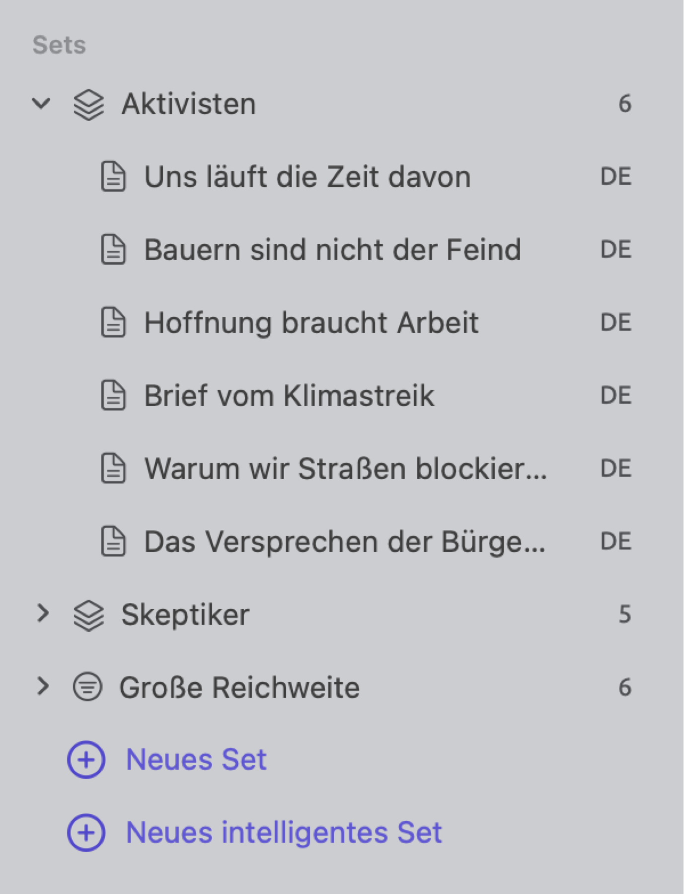
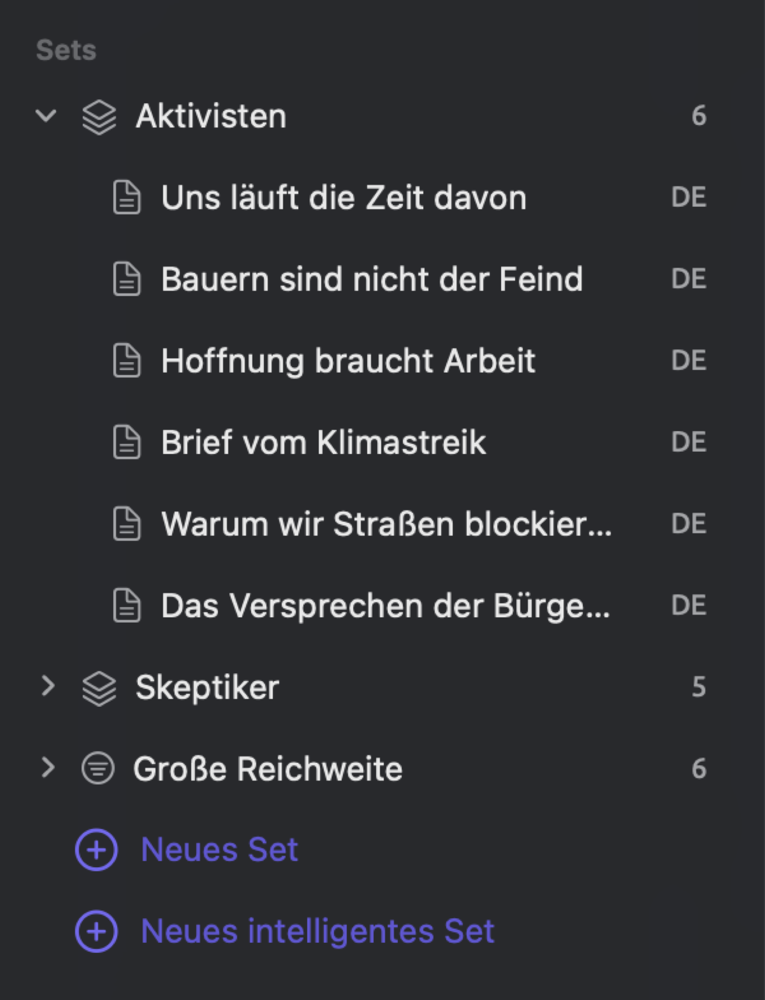
Ein Set anlegen
Am schnellsten legen Sie ein Set aus bereits ausgewählten Dokumenten an. Die Abbildung unten zeigt die sechs in der Seitenleiste ausgewählten Texte der Aktivisten aus „Klimadebatte“ mit dem geöffneten Untermenü Zu Set hinzufügen in ihrem Kontextmenü. Im Untermenü ist „Aktivisten“ deaktiviert, weil das Set alle sechs Dokumente bereits enthält.
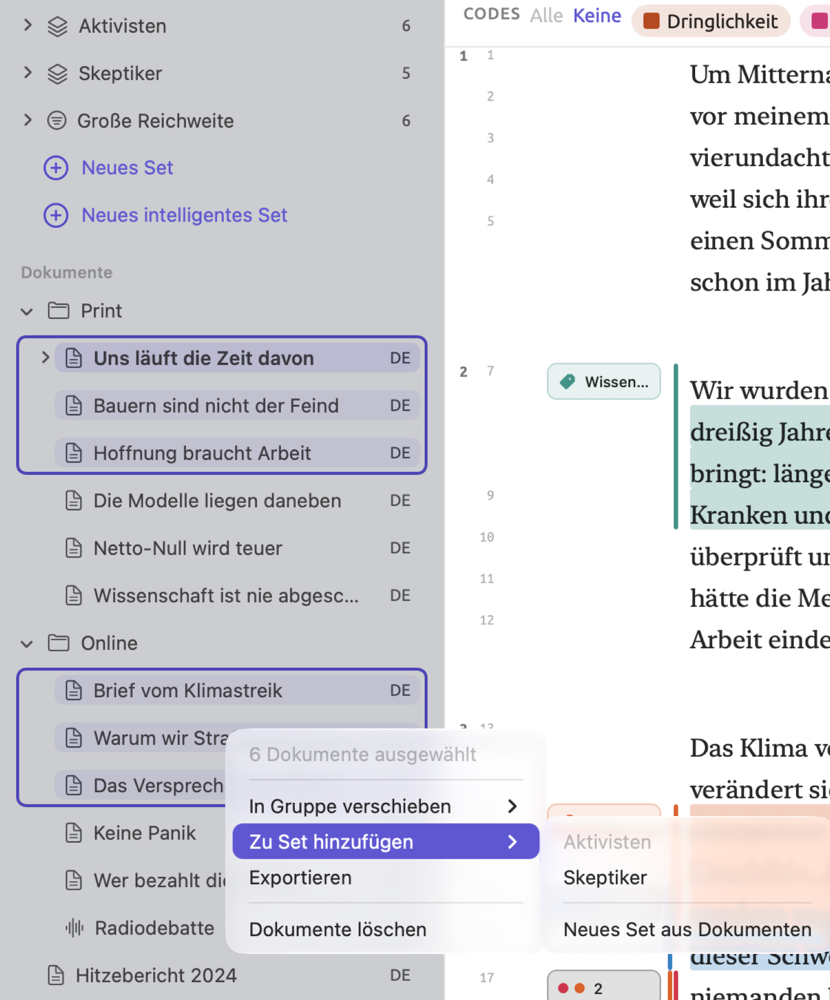
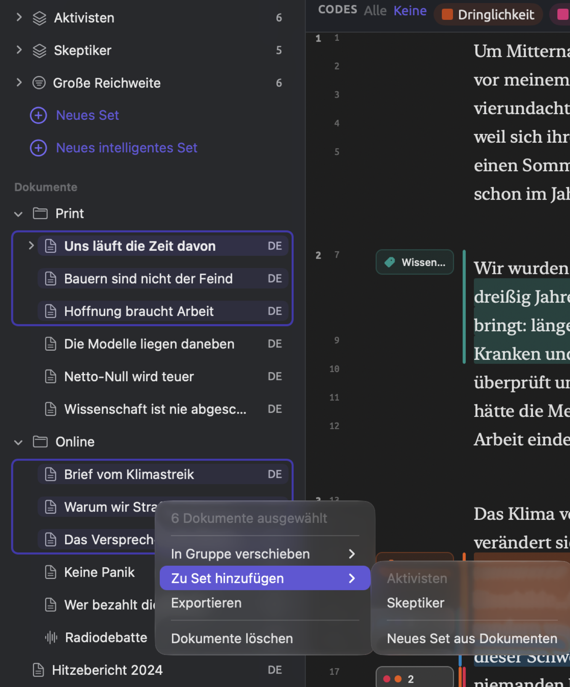
So machen Sie aus Ihrer Auswahl ein Set:
- Wählen Sie die Dokumente im Abschnitt Dokumente aus (mit ⌘-Klick oder ⇧-Klick wählen Sie mehrere aus).
- Klicken Sie mit der rechten Maustaste auf eines der ausgewählten Dokumente und wählen Sie Zu Set hinzufügen ▸ Neues Set aus Dokumenten.
- Geben Sie den Namen des Sets ein und drücken Sie den Zeilenschalter.
In einem großen Projekt können Sie einen Teil des Namens in das Feld Dokumente durchsuchen oben in der Seitenleiste eingeben und die gewünschten Dokumente in der Trefferliste auswählen. Projekt ▸ Zu Set hinzufügen bietet dieselben Befehle wie das Kontextmenü.
Um ein Set aus einem einzelnen Dokument anzulegen, klicken Sie mit der rechten Maustaste auf das Dokument und wählen Sets ▸ Neues Set aus Dokument. Bis Sie es umbenennen, trägt das neue Set den vorläufigen Namen „Neues Set aus Dokument“.
Sie können auch zuerst ein leeres Set anlegen und es nach Belieben später füllen. Wählen Sie dazu Neues Set am Ende des Abschnitts Sets oder Projekt ▸ Neues Set. Geben Sie den gewünschten Namen ein und bestätigen Sie mit dem Zeilenschalter; mit der Esc-Taste behält das Set den vorläufigen Namen „Neues Set“.
Sie können ein Set auch aus den Dokumenten bilden, in denen eine bestimmte Abfrage Treffer hat. Wählen Sie im Menü Aktionen der Abfrage Set aus Treffern erstellen; das Set trägt dann den Namen der Abfrage (siehe Set aus Treffern erstellen in Kapitel 18, Abfrageergebnisse nutzen).
Dokumente hinzufügen und entfernen
Um ein Dokument einem Set hinzuzufügen, wählen Sie es im Abschnitt Dokumente aus, öffnen mit einem Rechtsklick das Kontextmenü, gehen zu Sets und wählen das Set, in das es kommen soll. Bei mehreren Dokumenten wählen Sie zuerst die Dokumente aus, klicken dann mit der rechten Maustaste auf eines davon, wählen Zu Set hinzufügen und anschließend das Set, in das sie kommen sollen. Sets, die bereits jedes ausgewählte Dokument enthalten, sind deaktiviert. Das Menü listet nur gewöhnliche Sets auf, denn bei einem intelligenten Set bestimmen die Bedingungen den Inhalt.
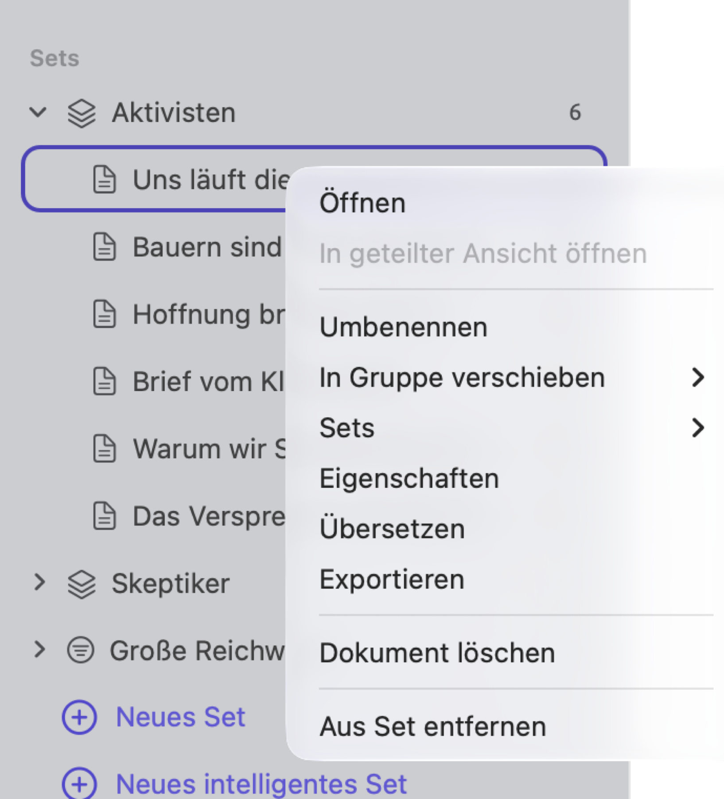
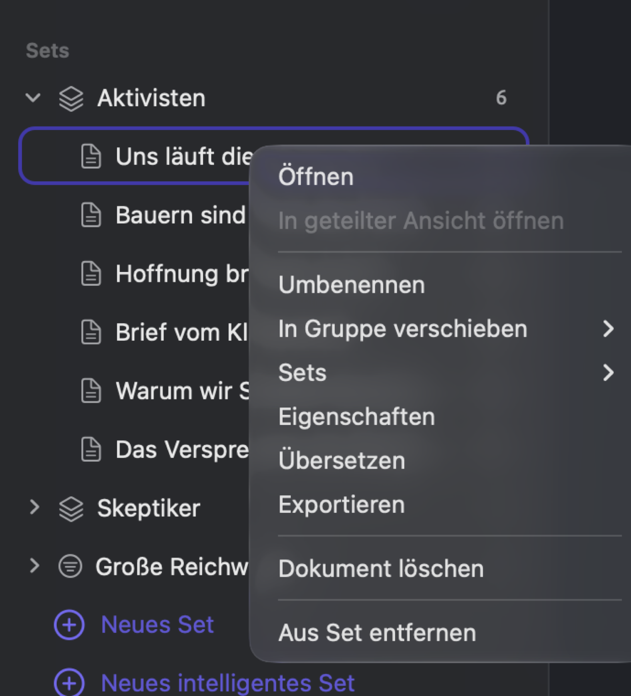
So entfernen Sie ein Dokument aus einem Set:
- Klicken Sie auf das Dreiecksymbol neben dem Set.
- Klicken Sie mit der rechten Maustaste auf das Dokument und wählen Sie Aus Set entfernen.
Es gibt auch den Menübefehl Projekt ▸ Aus Set entfernen, den Sie verwenden können, nachdem Sie unter dem Set auf das Dokument geklickt haben. Wenn Sie ein Dokument aus dem Projekt löschen, wird es aus allen Sets entfernt.
Um mehrere Dokumente zu entfernen, klicken Sie sie unter dem Set bei gedrückter Befehlstaste (⌘) an. Klicken Sie dann mit der rechten Maustaste auf eines davon oder öffnen Sie das Menü Projekt, um Aus Set entfernen zu wählen. Aus Set entfernen ist deaktiviert, wenn die Auswahl auch Dokumente unter einem anderen Set oder im Abschnitt Dokumente enthält.
Dokumentsets enthalten nur Originale. Fügen Sie mit Zu Set hinzufügen eine Übersetzung hinzu, kommt stattdessen ihr Original in das Set. Was es für eine Analyse bedeutet, wenn Übersetzungen beteiligt sind, erläutert Übersetzungen weiter unten in diesem Kapitel.
Ein Set öffnen
Sets öffnen sich in Tabs mit allen zehn Ansichten, die in der Seitenleiste unter Projekt stehen (von Codebuch bis Abfragen). Im Tab eines Sets beziehen sich diese zehn Ansichten jedoch nur auf die Dokumente des Sets.
Um ein Set zu öffnen, klicken Sie auf seinen Namen, oder Sie klicken mit der rechten Maustaste darauf und wählen Set öffnen. Die Kopfzeile des Tabs zeigt den Namen des Sets und die Zahl seiner Dokumente. Mehr zu jeder der zehn Ansichten finden Sie unter Das Projektregal in Kapitel 3, Projekte und Dokumente.
Mit Wortskizze im Kontextmenü öffnen Sie Wortskizzen aus den Dokumenten des Sets in einem eigenen Fenster.
Ein Set umbenennen, exportieren und löschen
Das Kontextmenü eines Sets bietet diese Befehle:
- Umbenennen macht den Namen des Sets zu einem bearbeitbaren Feld. Geben Sie den gewünschten Namen ein und drücken Sie den Zeilenschalter.
- Exportieren schreibt alle Dokumente des Sets zusammen mit dem Set selbst in ein LemmaLoom-Archiv. So können Sie einen Teil eines Projekts an eine Kollegin oder einen Kollegen weitergeben (siehe Kapitel 22, Austausch und Export).
- Set löschen löscht das gewählte Set sofort. Bearbeiten ▸ Set löschen widerrufen (⌘Z) holt es zurück. Nachdem Sie auf ein Set geklickt haben, können Sie es auch mit Projekt ▸ Set löschen (⌘⌫) löschen.
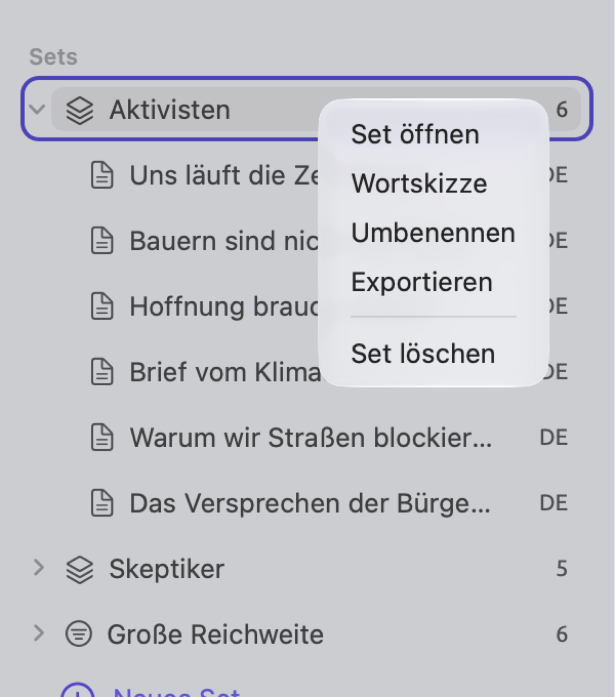
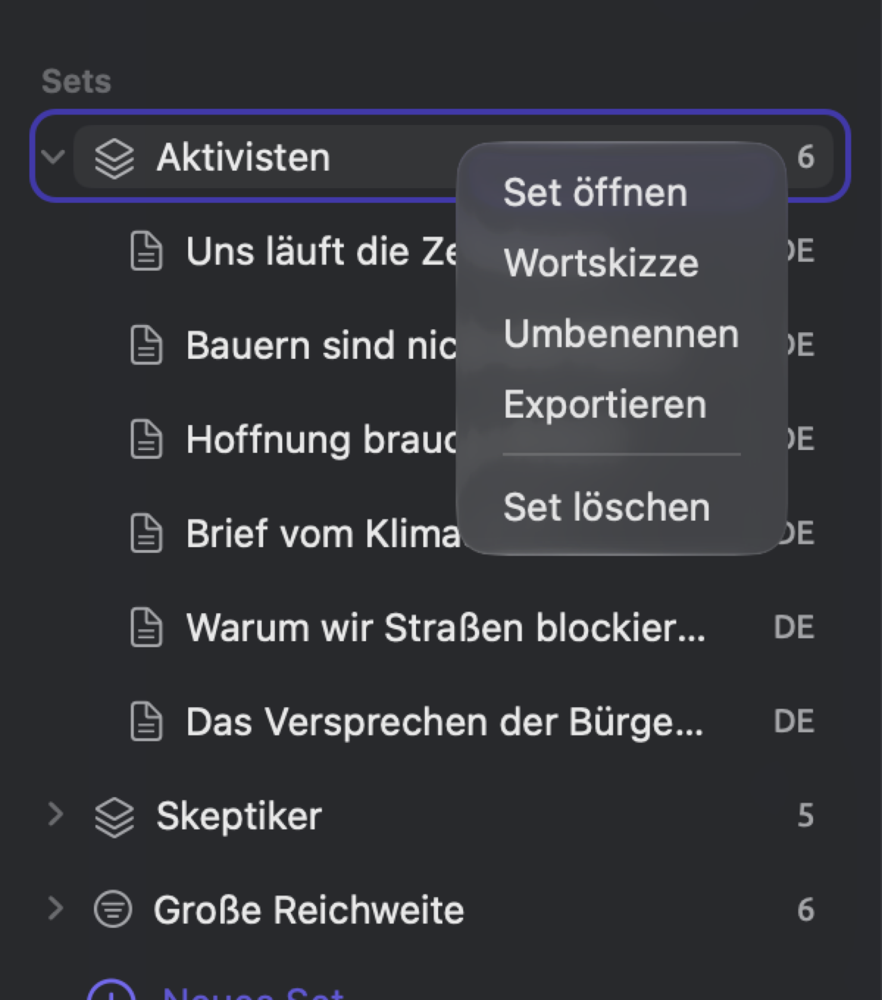
Nach dem Löschen eines Sets zeigen Codes, deren Geltungsbereich dieses Set war, im Menü Dokumentset den Eintrag Keine. Wählen Sie ein anderes Dokumentset oder einen anderen Geltungsbereich, um sie wieder zu verwenden (siehe Wo ein Code verwendet werden kann in Kapitel 7, Kodieren). Abfragen, die im Set gesichert waren, wandern in die Ansicht Abfragen des Projekts.
Intelligente Sets
Intelligente Sets enthalten die Dokumente, die ihre Bedingungen erfüllen. Im Beispielprojekt „Klimadebatte“ enthält das intelligente Set „Große Reichweite“ die sechs Dokumente, für die „Reichweite“ ist mindestens 100.000 gilt. Würde die „Reichweite“ von „Die Modelle liegen daneben“ von 96.000 auf 104.000 korrigiert, gehörte das Dokument sofort zu „Große Reichweite“, und die Zahl neben dem Namen des Sets stiege um eins auf 7.
In den meisten Punkten verhält sich ein intelligentes Set wie ein gewöhnliches Set. Es öffnet sich in einem Tab mit denselben Ansichten und kann überall als Geltungsbereich dienen, wo ein Set das kann. Da sich seine Mitglieder allein aus seinen Bedingungen ergeben, ändern Sie seinen Inhalt, indem Sie die Bedingungen bearbeiten.
Jede Analyse eines intelligenten Sets liest die Dokumente, die es in diesem Moment enthält. Eine Analyse von „Große Reichweite“ kann daher heute andere Ergebnisse liefern als dieselbe Analyse nächste Woche, wenn sich in der Zwischenzeit Werte geändert haben.
Ein intelligentes Set anlegen
„Große Reichweite“ braucht nur eine Bedingung, ein intelligentes Set kann aber mehrere verbinden. Die Abbildung zeigt den Dialog beim Anlegen des engeren intelligenten Sets „Vielgelesene Aktivisten“, das zwei Bedingungen zugleich verlangt: „Haltung“ ist eines von „Aktivismus“ und „Reichweite“ ist mindestens 100.000. Wie die Anzahl (2 Dokumente) zeigt, enthält es nur „Uns läuft die Zeit davon“ und „Brief vom Klimastreik“.
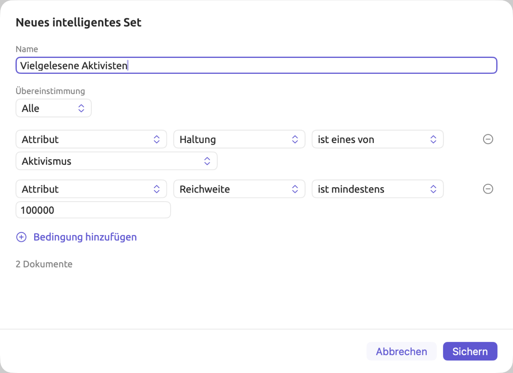
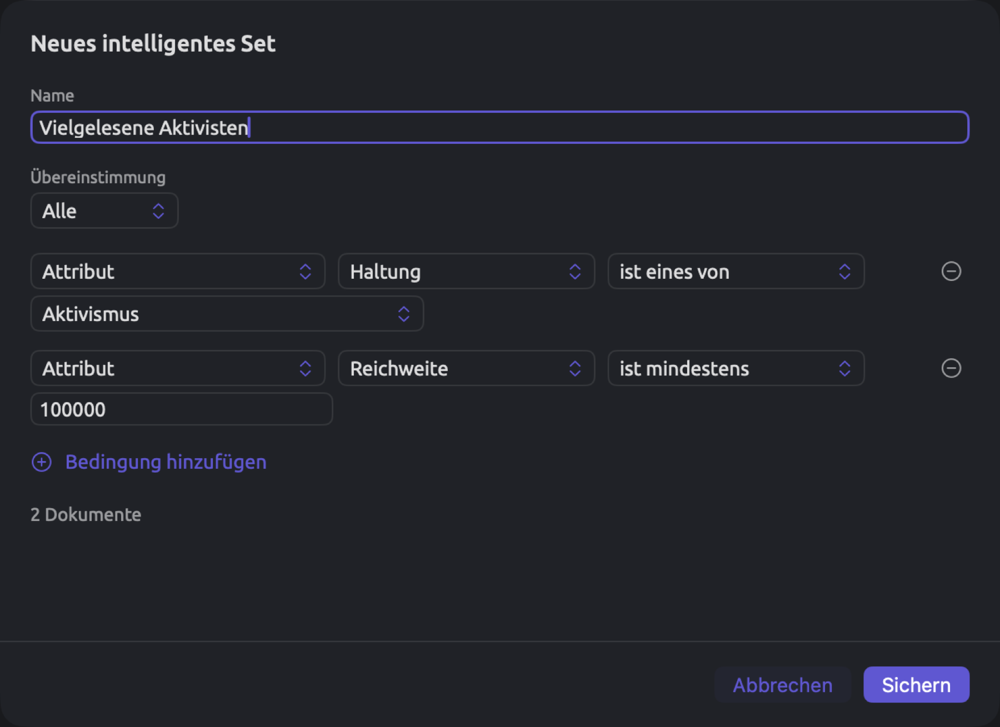
So legen Sie ein intelligentes Set an:
- Klicken Sie am Ende des Abschnitts Sets auf Neues intelligentes Set oder wählen Sie Projekt ▸ Neues intelligentes Set. Der Dialog Neues intelligentes Set öffnet sich mit einer Bedingung.
- Geben Sie unter Name einen Namen für das intelligente Set ein.
- Richten Sie die Bedingung ein. Wählen Sie im ersten Menü das Feld (bei Attribut im zweiten Menü außerdem das Attribut), dann den Vergleich, und geben Sie den Wert an (siehe Werte in einer Bedingung weiter unten in diesem Kapitel).
- Um zusätzlich etwas anderes zu prüfen, klicken Sie auf Bedingung hinzufügen und richten die neue Bedingung auf dieselbe Weise ein.
- Wählen Sie unter Übereinstimmung entweder Alle oder Beliebige (siehe Alle oder Beliebige unten).
- Prüfen Sie die Anzahl unter den Bedingungen und klicken Sie auf Sichern.
Jede Bedingung belegt eine Zeile. Im ersten Menü wählen Sie ein Feld, etwa Attribut, Tags oder Titel. Bei Attribut wählen Sie in einem zweiten Menü das Attribut. Im nächsten Menü stehen alle Vergleiche, die für das Feld in Frage kommen. Zuletzt geben Sie den Wert ein. Die Schaltfläche zum Entfernen am Ende einer Zeile (Bedingung entfernen) entfernt eine Bedingung; ist nur noch eine Bedingung übrig, ist die Schaltfläche deaktiviert (Mindestens ein Eintrag erforderlich).
Eine neue Bedingung verwendet immer zunächst das erste Attribut des Projekts und dessen ersten Vergleich. Eine neue Bedingung in „Klimadebatte“ beginnt also mit Attribut, „Haltung“, ist eines von. Hat ein Projekt keine Attribute, beginnt die erste Bedingung mit Tags und hat eines von.
Die Anzahl wird laufend aktualisiert. So sehen Sie schon beim Aufbau der Bedingungen, wie viele Originaldokumente des Projekts die bereits fertigen Bedingungen erfüllen. Solange keine Bedingung vollständig ist, umfasst die Anzahl alle Originaldokumente. Während Sie die erste Bedingung für „Klimadebatte“ einrichten, steht dort deshalb 14, denn das Projekt hat vierzehn Originaldokumente.
Sichern bleibt deaktiviert, bis Sie unter Name einen Namen eingetragen (Name ist leer) und jede Bedingung vervollständigt haben (Unvollständig). Halten Sie den Mauszeiger auf Sichern, um den genauen Grund zu sehen. Unvollständig bedeutet, dass eine Bedingung einen Wert braucht und keinen hat, zum Beispiel ist mindestens, wenn im Feld nichts steht, oder ist eines von ohne ausgewählte Einträge.
Wenn Sie das Feld einer Bedingung ändern, wird ihr Wert zurückgesetzt; der Vergleich bleibt nach Möglichkeit erhalten, andernfalls tritt der erste Vergleich des Felds an seine Stelle. Wenn Sie den Vergleich ändern, bleibt der Wert erhalten. So können Sie von ist mindestens zu ist größer als wechseln, ohne die Zahl erneut einzugeben.
Abfragen, die Dokumente finden, lassen sich auch als intelligente Sets sichern (siehe Eine Dokumentabfrage als intelligentes Set sichern in Kapitel 18, Abfrageergebnisse nutzen).
Alle oder Beliebige
Übereinstimmung legt fest, wie Ihre Bedingungen verknüpft werden. Steht Übereinstimmung auf Alle, muss ein Dokument jede Ihrer Bedingungen erfüllen; jede weitere Bedingung macht das intelligente Set enger. Bei Beliebige genügt es, wenn ein Dokument eine Ihrer Bedingungen erfüllt.
Für „Vielgelesene Aktivisten“ aus der Abbildung oben sind zwei Bedingungen festgelegt. Zum einen haben sechs Dokumente bei „Haltung“ den Wert „Aktivismus“, nämlich „Uns läuft die Zeit davon“, „Brief vom Klimastreik“, „Warum wir Straßen blockieren“, „Bauern sind nicht der Feind“, „Das Versprechen der Bürgermeisterin“ und „Hoffnung braucht Arbeit“. Zum anderen haben sechs Dokumente eine „Reichweite“ von mindestens 100.000, nämlich „Uns läuft die Zeit davon“, „Brief vom Klimastreik“, „Netto-Null wird teuer“, „Keine Panik“, „Streit um die CO2-Steuer“ und „Radiodebatte“.
| Übereinstimmung | Dokumente im intelligenten Set | Anzahl |
|---|---|---|
| Alle | die auf beiden Listen, „Uns läuft die Zeit davon“ und „Brief vom Klimastreik“ | 2 |
| Beliebige | die auf mindestens einer der Listen, nämlich die sechs Texte der Aktivisten, „Netto-Null wird teuer“, „Keine Panik“, „Streit um die CO2-Steuer“ und „Radiodebatte“ | 10 |
Zwei Dokumente stehen auf beiden Listen. Wer die Längen der beiden Listen, 6 und 6, einfach addiert, zählt diese zwei Dokumente doppelt; Beliebige ergibt deshalb 6 + 6 − 2 = 10 Dokumente.
Alle Bedingungen eines intelligenten Sets werden auf dieselbe Weise verknüpft und berücksichtigen nur Eigenschaften des Dokuments selbst. Eine Regel wie „Aktivisten mit einer Reichweite von mindestens 100.000 oder alle Skeptiker“ oder eine Regel, die die Mitgliedschaft in einem anderen Set prüft, verlangt eine Abfrage statt eines intelligenten Sets. Abfragen erlauben verschachtelte Regeln (Gruppe hinzufügen, was nichts mit Dokumentgruppen zu tun hat) und haben ein Feld Set (siehe Gruppen in Kapitel 15, Eine Abfrage erstellen).
Felder
Das erste Menü einer Bedingung enthält die unten aufgeführten Felder. Attribut erscheint dort nur, wenn Ihr Projekt Attribute hat.
| Feld | Was es prüft | Vergleiche |
|---|---|---|
| Attribut | den Wert des Attributs, das im zweiten Menü gewählt ist | hängen vom Typ des Attributs ab (siehe Vergleiche für Attribute) |
| Tags | die Tags des Dokuments | hat eines von, hat alle von, hat keines von, ist leer, ist nicht leer |
| Gruppe | die Gruppe, in der das Dokument liegt | ist eines von, ist keines von, ist leer, ist nicht leer |
| Sprache | die Sprache des Dokuments | ist eines von, ist keines von |
| Format | Text, PDF, Webseiten, Audio oder Video | ist eines von, ist keines von |
| Titel | den Namen des Dokuments | ist, ist nicht, enthält, enthält nicht, passt auf, ist leer, ist nicht leer |
| Autoren | die Autoren aus den Dokumenteigenschaften | wie bei Tags |
| Datum | das eigene Datum des Dokuments aus den Dokumenteigenschaften | ist, ist vor, ist nach, ist am oder nach, ist am oder vor, liegt zwischen, ist leer, ist nicht leer |
| Verlag, Publikation, URL, DOI | die Zitationsangaben | wie bei Titel |
| Quelldatei | den Namen der importierten Datei oder die Adresse der importierten Webseite | wie bei Titel |
| Erstellt | den Tag, an dem das Dokument dem Projekt hinzugefügt wurde | wie bei Datum |
| Geändert | den Tag, an dem das Dokument zuletzt geändert wurde | wie bei Datum |
| Farbe | die Farbe des Dokuments | ist eines von, ist keines von, ist leer, ist nicht leer |
| Token | die Zahl der Wörter und Satzzeichen, gezählt bei der Indizierung | ist, ist nicht, ist kleiner als, ist höchstens, ist größer als, ist mindestens, liegt zwischen, ist leer, ist nicht leer |
| Sätze | die Zahl der Sätze, gezählt bei der Indizierung | wie bei Token |
| Zeichen | die Zahl der Zeichen im Text, Leerzeichen eingeschlossen | wie bei Token |
| Mediendauer | die Länge einer Audio- oder Videoaufnahme | wie bei Token |
| Hat Medien | ob das Dokument eine Audio- oder Videoaufnahme ist | ist wahr, ist falsch, ist leer |
| Hat Übersetzungen | ob das Dokument mindestens eine Übersetzung hat | wie bei Hat Medien |
| Indizierung übersprungen | ob das Dokument ohne Indizierung importiert wurde und seitdem nicht mit Jetzt indizieren indiziert wurde | wie bei Hat Medien |
| Indexstatus | den Stand der Indizierung des Dokuments | ist eines von, ist keines von, ist leer, ist nicht leer |
Sprache bietet nur die Sprachen an, in denen Ihre Originaldokumente geschrieben sind. Das Projekt „Klimadebatte“ besteht nur aus deutschen Originalen, denn sein einziges englisches Dokument ist eine Übersetzung.
Geändert bezeichnet den Zeitpunkt, zu dem Ihr Dokument zuletzt bearbeitet, umbenannt oder in eine andere Gruppe verschoben wurde oder seine Tags oder Eigenschaften geändert wurden. Eine Änderung seiner Attributwerte im Attribute-Fenster oder das Umbenennen oder Löschen eines Tags im Tags-Fenster lässt Geändert unverändert.
LemmaLoom ermittelt Token und Sätze automatisch bei der Indizierung. Bis dahin sind beide 0. Vielleicht möchten Sie Dokumente mit einer Bedingung wie Token ist kleiner als 700 erfassen. Eine solche Bedingung erfasst auch Dokumente, die noch auf ihre Indizierung warten; eine zusätzliche Bedingung wie Indexstatus ist eines von Indiziert filtert sie heraus. Zeichen wird direkt aus dem Text des Dokuments gezählt und steht ab dem Import zur Verfügung.
Hat Medien, Hat Übersetzungen und Indizierung übersprungen sind immer entweder wahr oder falsch. Ebenso hat Indexstatus immer einen der sieben folgenden Werte:
| Wert | Das Dokument |
|---|---|
| Indiziert | ist indiziert |
| Indizierung | wird gerade indiziert |
| Analysator läuft | ist indiziert, und ein Analysator, ein eingebauter oder ein eigener, läuft darauf (siehe Analysatoren für ein Dokument wählen in Kapitel 21, Analyse und Indizierung) |
| Fehlgeschlagen | konnte nicht indiziert werden |
| Nicht indiziert | wartet auf die Indizierung |
| Nicht unterstützt | ist in einer anderen Sprache als Englisch, Deutsch und Chinesisch |
| Übersprungen | wurde ohne Indizierung importiert und seitdem nicht indiziert |
Ein intelligentes Set mit Indexstatus ist eines von Fehlgeschlagen, Nicht indiziert und Übersprungen enthält alle Dokumente, bei denen noch etwas zu tun ist. Sobald die Dokumente indiziert sind, verlassen sie das intelligente Set. Um jedes Dokument zu finden, das ohne Indizierung importiert wurde, verwenden Sie Indizierung übersprungen ist wahr. Mehr zu den Zuständen finden Sie unter Dokumente nach ihrem Indexstatus finden in Kapitel 21, Analyse und Indizierung.
Vergleiche für Attribute
Welche Vergleiche ein Attribut bietet, hängt von seinem Typ ab:
| Typ | Vergleiche |
|---|---|
| Text | ist, ist nicht, enthält, enthält nicht, passt auf, ist leer, ist nicht leer |
| Ganzzahl, Dezimalzahl | ist, ist nicht, ist kleiner als, ist höchstens, ist größer als, ist mindestens, liegt zwischen, ist leer, ist nicht leer |
| Datum | ist, ist vor, ist nach, ist am oder nach, ist am oder vor, liegt zwischen, ist leer, ist nicht leer |
| Boolescher Wert | ist wahr, ist falsch, ist leer |
| Auswahl | ist eines von, ist keines von, ist leer, ist nicht leer |
Werte in einer Bedingung
Wie Sie den Wert einer Bedingung eingeben, hängt vom Vergleich und vom Feld ab:
- Text und Zahlen geben Sie in das Feld Wert ein. Bei liegt zwischen erscheinen zwei Felder; die beiden Werte können in beliebiger Reihenfolge stehen, und beide Grenzen zählen mit. „Reichweite“ liegt zwischen
50000und100000erfasst also auch Dokumente mit einer „Reichweite“ von genau 50.000 oder 100.000. - Datumsangaben wählen Sie in einer Datumsauswahl, die beim heutigen Tag beginnt.
- ist leer, ist nicht leer, ist wahr und ist falsch gelten als vollständig, sobald Sie sie wählen.
- Bei ist eines von, ist keines von und den Vergleichen, die mit hat beginnen, klicken Sie zuerst auf den Wert. Daraufhin erscheint eine Liste mit Markierungsfeldern. Wählen Sie einen oder mehrere Einträge aus und klicken Sie dann außerhalb der Liste, um sie zu schließen; der Wert zeigt danach Ihre Auswahl. Er lautet dann etwa „Meinungsbeitrag“ oder „viral“, oder Keine, solange nichts ausgewählt ist.
Die Listen enthalten diese Einträge:
- bei einem Attribut vom Typ Auswahl seine Wahlmöglichkeiten, gefolgt von allen anderen Werten, die Dokumente noch haben;
- bei Tags und Autoren die Tags und Autoren, die an Dokumenten des Projekts vorkommen;
- bei Gruppe die Gruppen des Projekts;
- bei Sprache die Sprachen, in denen die Originaldokumente geschrieben sind;
- bei Farbe die elf verfügbaren Dokumentfarben von Rot bis Grau;
- bei Format die fünf verfügbaren Formate und bei Indexstatus die sieben oben genannten Zustände.
Eine Dauer für Mediendauer geben Sie in Minuten und Sekunden ein (etwa 30:00) oder in Stunden, Minuten und Sekunden (etwa 1:05:30). Vor dem Vergleich wird die Zeit in Sekunden umgerechnet; 1:05:30 entspricht also 1 × 3.600 + 5 × 60 + 30 = 3.930 Sekunden. Eine einzelne Zahl gilt als Sekundenzahl. „Radiodebatte“ dauert zum Beispiel 5 Minuten und 37 Sekunden (5 × 60 + 37 = 337 Sekunden), und deshalb treffen sowohl Mediendauer ist größer als 5:00 (300 Sekunden) als auch ist größer als 5 (5 Sekunden) auf das Dokument zu.
Da Aufnahmen auf die Tausendstelsekunde genau gemessen werden, trifft ist bei einer Dauer selten genau zu. Verwenden Sie stattdessen ist mindestens, ist höchstens oder liegt zwischen.
Wie Werte verglichen werden
Textvergleiche ignorieren Groß- und Kleinschreibung, Akzente sowie Leerzeichen am Anfang oder Ende. Sie ignorieren auch, ob ein Zeichen voller oder halber Breite ist (das sind die breiten und schmalen Formen von Buchstaben und Ziffern in chinesischen und japanischen Texten). Ein Vergleich mit ist bezieht sich auf den ganzen Wert, während enthält Ihren Text an beliebiger Stelle darin findet. „Medium“ enthält herold findet die drei Dokumente aus „Der Nordherold“. „Medium“ enthält und findet zwei Dokumente, „Hitzebericht 2024“ vom „Amt für Wetter und Klima“ und außerdem „Das Versprechen der Bürgermeisterin“, weil dessen Medium, „Rathaus-Rundbrief“, und in Rundbrief enthält. Prüfen Sie bei Vergleichen mit kurzem Text vor dem Sichern unbedingt die Anzahl.
Der Vergleich passt auf prüft den ganzen Wert anhand eines einfachen Textmusters. Dabei steht * als Platzhalter für eine beliebige Folge von Zeichen und ? für genau ein Zeichen. Titel passt auf *teuer findet „Netto-Null wird teuer“ und „Streit um die CO2-Steuer“, denn auch Steuer endet auf teuer; Titel passt auf teuer findet nichts, weil das Muster den ganzen Titel abdecken muss.
Zahlen werden nach ihrem Zahlenwert verglichen, sodass 9 vor 10 kommt. Datumsangaben werden nach Kalendertagen verglichen. ist vor schließt den Tag selbst aus, ist am oder vor schließt ihn ein. Für Erstellt und Geändert hält LemmaLoom Datum und Uhrzeit fest und rechnet sie für den Vergleich in einen Tag in der lokalen Zeitzone Ihres Mac um. „Erscheinungsdatum“ liegt zwischen 1. September 2024 und 30. September 2024 findet in „Klimadebatte“ die fünf Dokumente, die in diesem Zeitraum erschienen sind.
Bei Listen verlangen ist eines von und hat eines von mindestens einen der ausgewählten Einträge, hat alle von verlangt alle ausgewählten Einträge. Die Vergleiche ist keines von und hat keines von lassen kein Dokument zu, das einen der ausgewählten Einträge hat. Beim Vergleich von Listeneinträgen wie Tags, Autoren und den Wahlmöglichkeiten einer Auswahl werden nur Groß- und Kleinschreibung sowie Leerzeichen am Anfang oder Ende des Namens ignoriert. In „Klimadebatte“ tragen drei Dokumente das Tag „Meinungsbeitrag“ und zwei andere das Tag „viral“:
| Bedingung | Dokumente | Anzahl |
|---|---|---|
| Tags hat eines von „Meinungsbeitrag“, „viral“ | Uns läuft die Zeit davon, Brief vom Klimastreik, Netto-Null wird teuer, Keine Panik, Wer bezahlt die Wende | 5 |
| Tags hat alle von „Meinungsbeitrag“, „viral“ | keine | 0 |
| Tags hat keines von „Meinungsbeitrag“ | die 14 Originale außer „Uns läuft die Zeit davon“, „Netto-Null wird teuer“ und „Wer bezahlt die Wende“ | 11 |
Die Abbildung unten zeigt die erste dieser Bedingungen mit aufgeklappter Tag-Liste.
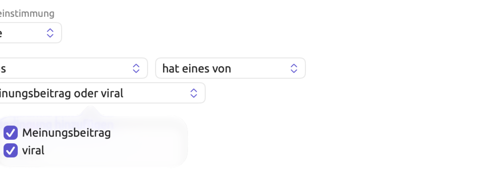
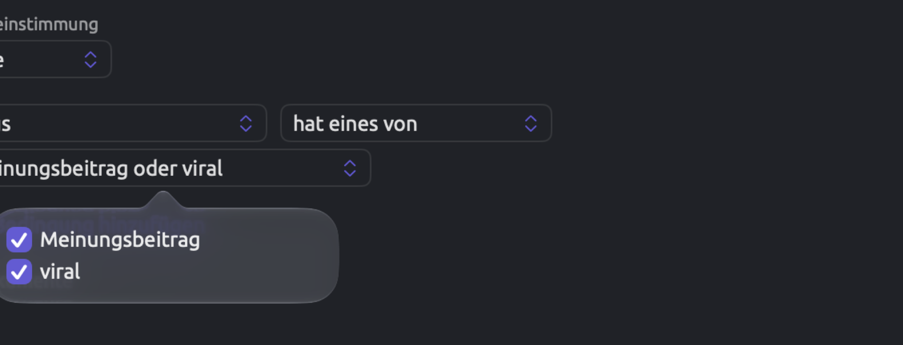
Dokumente ohne Wert
Ein Dokument ohne Wert erfüllt die meisten Vergleiche nicht. „Reichweite“ ist kleiner als 10000 findet „Das Versprechen der Bürgermeisterin“ und „Hitzebericht 2024“, aber kein Dokument, für das überhaupt keine „Reichweite“ eingetragen ist. Das können zum Beispiel neu importierte Dokumente sein. Die fünf Vergleiche ist nicht, enthält nicht, ist keines von, hat keines von und ist leer lassen solche Dokumente zu.
Am stärksten wirkt sich der Unterschied bei ist keines von aus. Jedes Original in „Klimadebatte“ hat alle vier Attributwerte, doch zwei Originale gehören zu keiner Gruppe. Gruppe ist keines von „Print“ trifft auf 8 Dokumente zu, die sechs in „Online“ sowie „Hitzebericht 2024“ und „Streit um die CO2-Steuer“, denen keine Gruppe zugewiesen ist. Um die Auswahl auf die sechs Dokumente in „Online“ einzugrenzen, fügen Sie eine zweite Bedingung hinzu, Gruppe ist nicht leer, und lassen Übereinstimmung auf Alle stehen; die Anzahl sinkt dann auf 6.
Attribute vom Typ Boolescher Wert behandeln Dokumente ohne zugewiesenen Wert als leer. Der Vergleich ist falsch findet nur die Dokumente, deren Wert auf falsch gesetzt ist, sei es durch ein Markierungsfeld, das aktiviert und wieder deaktiviert wurde, durch einen als falsch importierten Wert oder durch Wert festlegen mit deaktiviertem Markierungsfeld. Für die übrigen verwenden Sie ist leer.
Ein intelligentes Set ändern
Um die Bedingungen eines intelligenten Sets zu ändern, klicken Sie in der Seitenleiste mit der rechten Maustaste auf das intelligente Set und wählen im Kontextmenü Bearbeiten, oder Sie klicken auf das intelligente Set und wählen Projekt ▸ Intelligentes Set bearbeiten. Das Bearbeiten im Dialog Intelligentes Set bearbeiten funktioniert genauso wie das Anlegen in Neues intelligentes Set. Erst ein Klick auf Sichern übernimmt Ihre Änderungen. Um ein intelligentes Set umzubenennen, klicken Sie mit der rechten Maustaste darauf und wählen im Kontextmenü Umbenennen. Das ändert nur den Namen.
Wenn Sie Attribute oder Gruppen umbenennen, passen sich intelligente Sets entsprechend an. So wirken sich das Löschen und andere Änderungen aus:
- Wenn Sie eine Gruppe löschen, wird sie aus jeder Bedingung entfernt, die auf sie verweist. Prüfte ein intelligentes Set nur diese Gruppe, bleibt eine Bedingung Gruppe ist eines von ohne ausgewählten Eintrag zurück, und das intelligente Set ist leer. Wenn Sie es das nächste Mal bearbeiten, zeigt der Wert Keine, und Sichern bleibt deaktiviert, bis Sie eine andere Gruppe angeben oder die Bedingung entfernen.
- Wenn Sie ein Attribut löschen, treffen Bedingungen, die es prüfen, auf kein Dokument mehr zu. Bei Alle wird das intelligente Set leer; bei Beliebige wirken die übrigen Bedingungen weiter. Öffnen Sie das intelligente Set mit Bearbeiten, ist das Attributmenü der betroffenen Bedingung leer, und Sichern bleibt deaktiviert, bis Sie die Bedingung ändern oder entfernen.
- Auch eine Änderung des Attributtyps kann dazu führen, dass Bedingungen auf kein Dokument mehr zutreffen. Ändert sich der Typ eines Attributs (etwa „Haltung“ von Auswahl zu Text), treffen Vergleiche, die der neue Typ nicht bietet, auf kein Dokument mehr zu. Unter den Attributtypen bietet nur Auswahl Vergleiche wie ist eines von, deshalb trifft „Haltung“ ist eines von „Aktivismus“ auf kein Dokument mehr zu. Öffnen Sie das intelligente Set mit Bearbeiten, zeigen solche Bedingungen den ersten Vergleich des neuen Typs mit leerem Wert; geben Sie den Wert von Hand ein, hier als „Haltung“ ist
Aktivismus, und sichern Sie. - Schließlich wirkt sich das Umbenennen oder Löschen von Tags unter Fenster ▸ Tags auf intelligente Sets mit Bedingungen Tags aus. Benennen Sie ein Tag um, übernimmt jede Bedingung Tags, die es nennt, den neuen Namen. Löschen Sie ein Tag, wird es aus Bedingungen mit hat eines von und hat keines von entfernt; in Bedingungen mit hat alle von bleibt es dagegen stehen, sodass sie auf kein Dokument mehr zutreffen, bis Sie sie bearbeiten.
Intelligente Sets außerhalb von LemmaLoom
Das Austauschformat REFI-QDA kennt nur gewöhnliche Sets. Wenn Sie Ihr Projekt in diesem Format exportieren, werden alle intelligenten Sets als gewöhnliche Sets exportiert, die ihre Mitglieder zum Zeitpunkt des Exports enthalten. Ein LemmaLoom-Archiv behält alle Bedingungen, die ein intelligentes Set bestimmen, sodass es in einer anderen Installation von LemmaLoom weiterverwendet werden kann. Mehr zu beiden Formaten finden Sie in Kapitel 22, Austausch und Export.
Gruppen
Gruppen sind Ordner, mit denen Sie die Dokumente im Abschnitt Dokumente der Seitenleiste ordnen. Das Projekt „Klimadebatte“ enthält zum Beispiel die Gruppen „Print“ und „Online“, die die gedruckten Beiträge von den Online-Beiträgen trennen; zu „Online“ gehört außerdem „Radiodebatte“. Ein Dokument kann in höchstens einer Gruppe liegen, und die Übersetzungen eines Dokuments liegen automatisch in derselben Gruppe. Mehr dazu, wie Sie Gruppen anlegen, füllen, umbenennen und löschen, finden Sie unter Gruppen in Kapitel 3, Projekte und Dokumente.
Um die Dokumente einer Gruppe zu analysieren, legen Sie ein intelligentes Set mit einer Bedingung Gruppe an (siehe Ein intelligentes Set anlegen weiter oben in diesem Kapitel). Wählen Sie im ersten Menü der Bedingung Gruppe, behalten Sie ist eines von bei und wählen Sie die Gruppe aus. Ein solches intelligentes Set ändert sich, wenn Dokumente in die Gruppe kommen oder sie verlassen. In „Klimadebatte“ erfasst Gruppe ist eines von „Print“ die sechs Dokumente in „Print“, und Gruppe ist leer erfasst die beiden Dokumente ohne Gruppe, „Hitzebericht 2024“ und „Streit um die CO2-Steuer“.
Auch Abfragen in LemmaLoom können über ein Feld Gruppe Gruppen prüfen, und mit Vorlagen erstellen Sie Abfrageergebnisse, die nach Gruppen getrennt zählen (siehe Vorlagen in Kapitel 17, Abfragemuster und Erkundung). Die Code-Matrix kann ihre Spalten mit Spalten gruppieren nach gruppenweise zusammenfassen (siehe Kapitel 13, Codes auswerten).
Tags
Eine Liste für alle Projekte
Tags können Sie an Projekte, Dokumente, Codes, Memos und Verknüpfungen vergeben. Jedes Tag, das Sie eingeben, gehört zu einer einzigen globalen Liste, die Ihrer ganzen Bibliothek zur Verfügung steht. Abfragen können sogar Ihre ganze Bibliothek nach Dokumenten oder Projekten mit bestimmten Tags durchsuchen (siehe Projektübergreifend arbeiten in Kapitel 3, Projekte und Dokumente).
Haben Sie in „Klimadebatte“ ein Dokument mit dem Tag „viral“ versehen und tippen später in einem anderen Projekt vir, während Sie einem Code Tags geben, schlägt LemmaLoom „viral“ vor. Bei Tag-Namen spielt Groß- und Kleinschreibung keine Rolle, sodass „Viral“ und „viral“ dasselbe Tag bezeichnen.
Wählen Sie Fenster ▸ Tags, um die globale Liste zu sehen. Ein Doppelklick auf ein Tag öffnet seine Dokumente in einem Tab. Ein Klick auf eine seiner Zahlen zeigt dagegen, welche Objekte im aktiven Projekt das Tag tragen oder welche Projekte es verwenden. Um ein Tag überall umzubenennen oder es von allem zu entfernen, was es trägt, klicken Sie mit der rechten Maustaste darauf. Mehr dazu finden Sie unter Das Tags-Fenster in Kapitel 3, Projekte und Dokumente.
Ein Dokument mit Tags versehen
In „Klimadebatte“ tragen drei Dokumente das Tag „Meinungsbeitrag“, nämlich „Uns läuft die Zeit davon“, „Netto-Null wird teuer“ und „Wer bezahlt die Wende“. Zwei Dokumente tragen das Tag „viral“, nämlich „Brief vom Klimastreik“ und „Keine Panik“. Tags können Sie beim Import eines Dokuments, in den Dokumenteigenschaften oder im Inspektor vergeben. Im Inspektor geht es am schnellsten:
- Öffnen Sie das Dokument.
- Klicken Sie im Inspektor auf Text und dann auf Details.
- Klicken Sie unter Tags auf das Feld Tag hinzufügen, geben Sie das Tag ein und drücken Sie den Zeilenschalter. Auch ein Komma schließt ein Tag ab.
Sobald Sie drei Zeichen eingegeben haben, schlägt LemmaLoom passende Tags aus der gemeinsamen Liste vor. Ein Tag, das es bereits in anderer Schreibweise gibt, behält seine bisherige Schreibweise, gleich wie Sie Groß- und Kleinbuchstaben eingeben. Um ein Tag zu entfernen, klicken Sie auf sein × (Tag entfernen). Alle Änderungen im Inspektor werden sofort gesichert, für das Dokument und für alle seine Übersetzungen.
Tags lassen sich immer nur einem Dokument auf einmal hinzufügen. Für eine Angabe, die sich bei vielen Dokumenten wiederholt, legen Sie besser ein Attribut an, statt Tags zu verwenden. Mit Wert festlegen geben Sie sogar mehreren Dokumenten auf einmal einen Wert, und ein Attribut vom Typ Boolescher Wert oder Auswahl kann ganz ähnlich wie ein Tag dienen (siehe Einen Wert für viele Dokumente festlegen weiter unten in diesem Kapitel).
Tags in der Seitenleiste
Der Abschnitt Tags unten in der Seitenleiste listet die Tags, die an Dokumenten des aktiven Projekts vorkommen, in alphabetischer Reihenfolge auf. Neben jedem Tag steht die Zahl der Originaldokumente, die es tragen; in „Klimadebatte“ sind das 3 Dokumente mit dem Tag „Meinungsbeitrag“ und 2 Dokumente mit dem Tag „viral“. Dieser Abschnitt zählt nur Tags an Dokumenten. Das Tags-Fenster zählt auch Tags an Projekten, Codes, Memos und Verknüpfungen.
Jedes Tag führt direkt zu den Dokumenten, die es tragen, und ist damit ein schneller Weg, einige Dokumente gemeinsam durchzusehen.
- Klicken Sie auf ein Tag, um es in einem Tab zu öffnen. Der Tab hat dieselben zehn Ansichten wie ein Set, beschränkt auf die Dokumente mit diesem Tag.
- Klicken Sie mit der rechten Maustaste auf ein Tag und wählen Sie Wortskizze, um Wortskizzen aus den Dokumenten mit diesem Tag zu erstellen.
- Klicken Sie mit der rechten Maustaste auf ein Tag und wählen Sie Umbenennen oder Tag löschen, um es wie im Tags-Fenster umzubenennen oder zu löschen. Die Änderung gilt in jedem Projekt, in dem das Tag vorkommt.
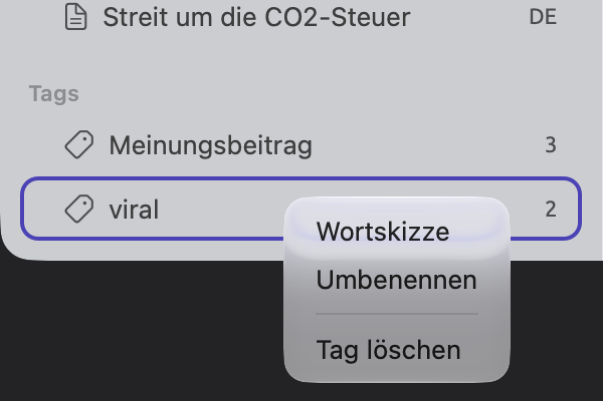
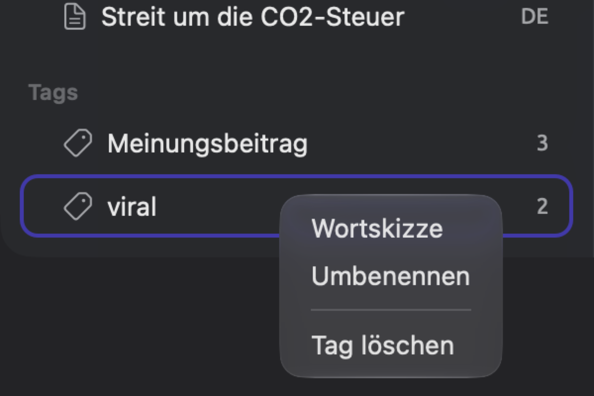
Sobald Sie einem weiteren Dokument das Tag „viral“ geben, steigt die Zahl neben „viral“ auf 3, und das Dokument erscheint in den Ansichten des Tags. Trägt kein Dokument des Projekts ein Tag mehr, verschwindet das Tag aus diesem Abschnitt.
Wie das Feld Tags in intelligenten Sets funktioniert, beschreibt Wie Werte verglichen werden weiter oben in diesem Kapitel. Mit den Tags an Codes lassen sich die Einträge des Codebuchs filtern; mehr zu Tags an Codes, Memos und Verknüpfungen erfahren Sie in Kapitel 7, Kodieren.
Attribute
Die meisten Vergleiche in LemmaLoom beruhen auf Attributen. Intelligente Sets stellen Dokumente anhand ihrer Attributwerte zusammen, und mehrere Analysen schlüsseln ihre Ergebnisse nach diesen Attributen auf (siehe den Abschnitt Wo Attribute verwendet werden können weiter unten). In „Klimadebatte“ sind vier Attribute festgelegt. „Haltung“ teilt die Texte nach Seiten ein, „Reichweite“ ermöglicht es dem Set „Große Reichweite“, die viel gelesenen Texte herauszufiltern, „Erscheinungsdatum“ versieht jeden Text mit einem Datum, und „Medium“ hält fest, woher jeder Text stammt.
Attributtypen
Jedes Attribut hat einen von sechs Typen. Der Typ bestimmt, was ein Wert sein darf, wie er eingegeben wird und welche Vergleiche eine Bedingung damit anstellen kann.
| Typ | Ein Wert ist | Eingabe über | In „Klimadebatte“ |
|---|---|---|---|
| Text | beliebiger Text | ein Textfeld | Medium |
| Ganzzahl | eine ganze Zahl, auch eine negative | ein Zahlenfeld | Reichweite |
| Dezimalzahl | eine Zahl, die Nachkommastellen haben darf | ein Zahlenfeld | |
| Boolescher Wert | wahr oder falsch | ein Markierungsfeld | |
| Datum | ein Kalendertag | eine Datumsauswahl | Erscheinungsdatum |
| Auswahl | eine aus einer Liste von Wahlmöglichkeiten, die Sie festlegen | ein Menü | „Haltung“, mit den Wahlmöglichkeiten „Aktivismus“, „Skepsis“ und „Neutral“ |
Eine Auswahl sorgt für einheitliche Schreibweisen, und das Attribute-Fenster sortiert ihre Werte in der Reihenfolge der Wahlmöglichkeiten. Attribute vom Typ Ganzzahl oder Dezimalzahl erlauben Vergleiche wie ist mindestens und lassen sich in der Code-Matrix oder im Skizzenraum in Bereiche einteilen. Ein Attribut vom Typ Datum erlaubt ist vor und ist nach, und die Code-Matrix kann Datumsangaben nach Jahr oder Monat zusammenfassen. Freien Text tragen Sie als Werte in ein Attribut vom Typ Text ein. Das Attribut „Medium“ in „Klimadebatte“ hat zum Beispiel den Typ Text. Wie Sie den Typ in gewissen Grenzen ändern, beschreibt Den Typ eines Attributs ändern weiter unten in diesem Kapitel.
Das Attribute-Fenster
Das Attribute-Fenster zeigt jedes Originaldokument eines Projekts mit seinen Attributwerten in einer Tabelle. Sie öffnen das Fenster über Projekt ▸ Attribute oder über das Kontextmenü des Projekts unter Projekte in der Seitenleiste (klicken Sie mit der rechten Maustaste darauf und wählen Sie Attribute). Das Fenster kann geöffnet bleiben, während Sie arbeiten. Die Abbildung zeigt das Fenster für „Klimadebatte“, absteigend nach „Reichweite“ sortiert, mit den sechs ausgewählten Dokumenten der Aktivisten.
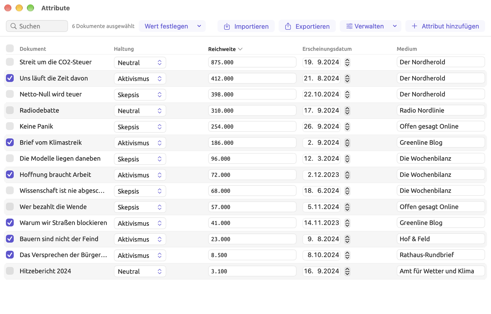
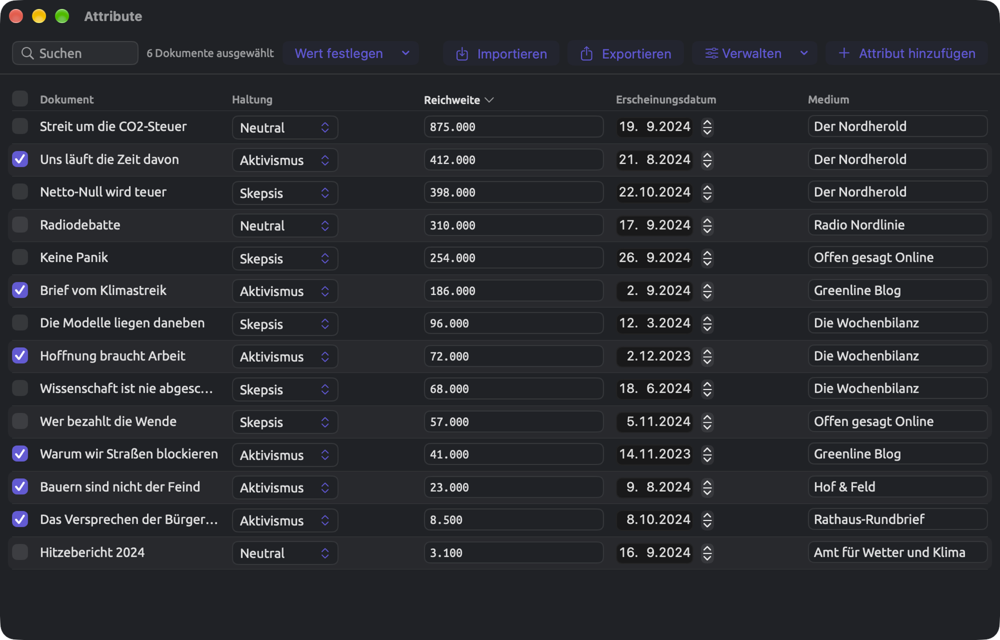
Die Zeile oben enthält Suchen und an ihrem Ende Importieren, Exportieren, Verwalten und Attribut hinzufügen. Darunter steht die Tabelle mit einer Spalte für Markierungsfelder, einer Spalte Dokument und einer Spalte für jedes Attribut des Projekts. Hat ein Projekt keine Attribute, zeigt das Fenster nur Importieren und Attribut hinzufügen.
Das Fenster zeigt ausschließlich Originaldokumente. Übersetzungen übernehmen die Attributwerte ihrer Originale; ein Wert, den Sie für „Uns läuft die Zeit davon“ eingeben, gilt also auch für „Uns läuft die Zeit davon (Englisch)“.
Ein Attribut anlegen
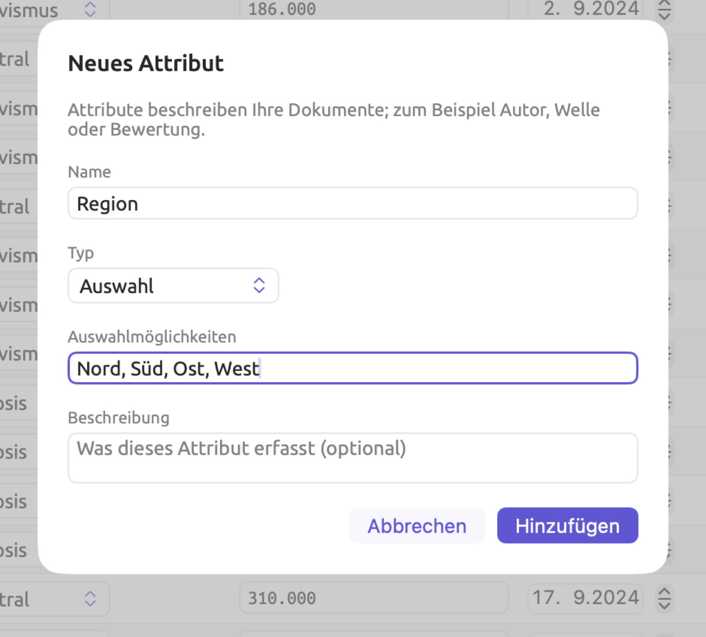
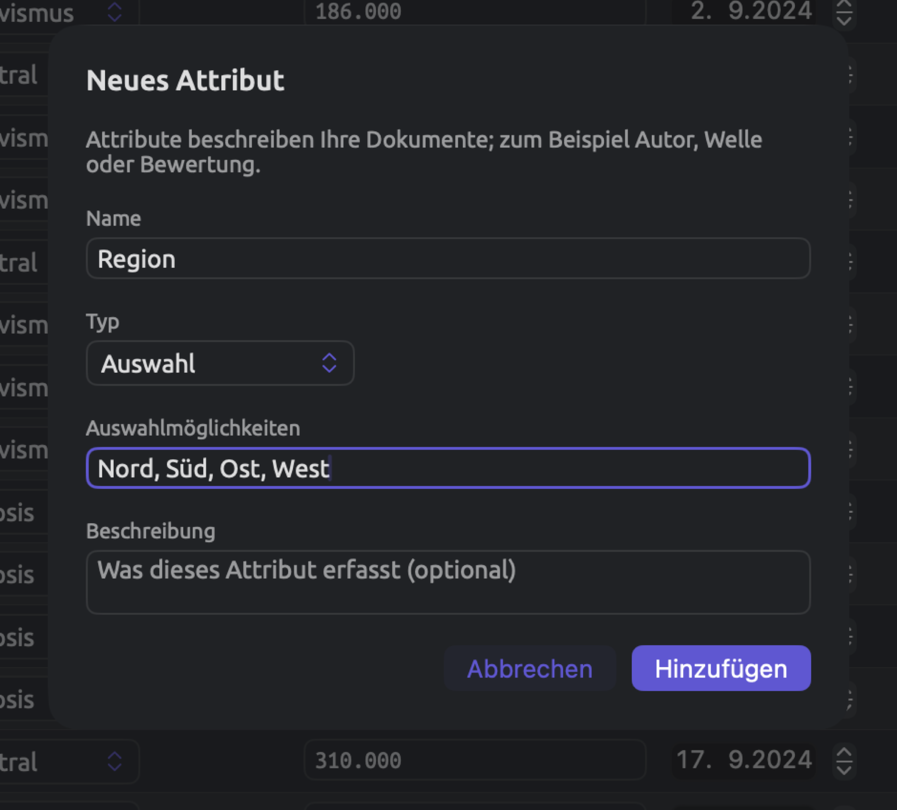
So legen Sie im Attribute-Fenster ein Attribut an:
- Klicken Sie auf Attribut hinzufügen.
- Geben Sie im Dialog Neues Attribut unter Name einen Namen ein.
- Wählen Sie seinen Typ.
- Bei einer Auswahl geben Sie die Wahlmöglichkeiten unter Auswahlmöglichkeiten ein, eine pro Zeile; Auswahlmöglichkeit hinzufügen fügt eine Zeile hinzu.
- Wenn Sie möchten, beschreiben Sie unter Beschreibung, was das Attribut festhält.
- Klicken Sie auf Hinzufügen.
Die Schaltfläche Hinzufügen ist deaktiviert, wenn das Feld Name leer ist (Name ist leer), wenn Ihr Projekt bereits ein Attribut mit demselben Namen hat, gleich in welcher Groß- und Kleinschreibung (Name bereits vergeben), oder wenn Sie eine Auswahl ohne Wahlmöglichkeiten anlegen (Keine Auswahlmöglichkeiten). Das neue Attribut erscheint als Spalte ganz rechts in der Tabelle und hat noch für kein Dokument einen Wert.
Attribute können Sie Ihren Projekten auch in den Dialogen Neues Projekt und Projekteigenschaften, in den Dokumenteigenschaften, im Dialog Dokument importieren, im Inspektor und beim Import von Attributwerten aus einer Tabelle hinzufügen. Überall außer beim Import aus einer Tabelle und im Dialog Neues Attribut schlägt LemmaLoom Attribute aus allen Ihren Projekten vor, sobald Sie mindestens drei Zeichen eines Namens eingegeben haben. Jeder Vorschlag zeigt den Typ des Attributs. Wählen Sie einen Vorschlag aus oder geben Sie den Namen direkt ein, werden Typ und Wahlmöglichkeiten übernommen, sodass Ihre Attribute über mehrere Studien hinweg einheitlich bleiben. Das neu hinzugefügte Attribut gehört ausschließlich zu diesem Projekt.
Werte eingeben
Klicken Sie im Attribute-Fenster auf eine Zelle und geben Sie den Wert ein, je nach Typ des Attributs auf folgende Weise:
- Bei Text geben Sie den Text ein.
- Bei Ganzzahl und Dezimalzahl geben Sie die Zahl ein und drücken den Zeilenschalter oder klicken außerhalb der Zelle. Nur Zahlen sind hier gültig, und wenn Sie die Eingabe löschen, wird der Attributwert gelöscht.
- Bei Boolescher Wert aktivieren oder deaktivieren Sie das Markierungsfeld.
- Bei Datum wählen Sie ein Datum in der Datumsauswahl.
- Bei Auswahl wählen Sie eine Wahlmöglichkeit aus dem Menü oder Keine, um den Wert zu entfernen.
Alle Änderungen an Attributwerten werden automatisch gesichert.
Für einzelne Dokumente ist der Inspektor meist schneller. Er zeigt die Attribute und Tags des aktiven Dokuments (siehe die Abbildung unten mit „Uns läuft die Zeit davon“, das vier Werte und das Tag „Meinungsbeitrag“ hat).
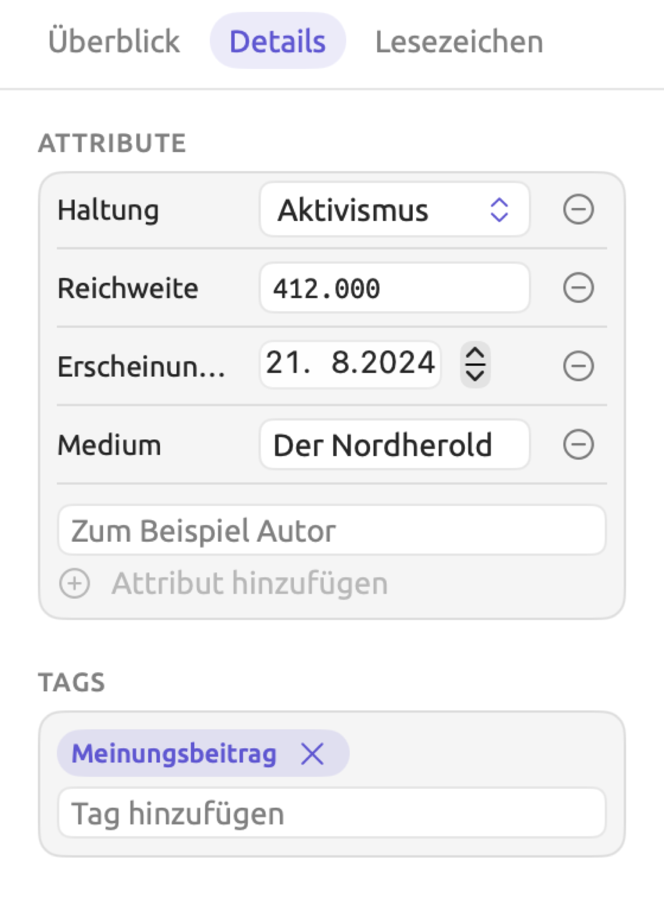
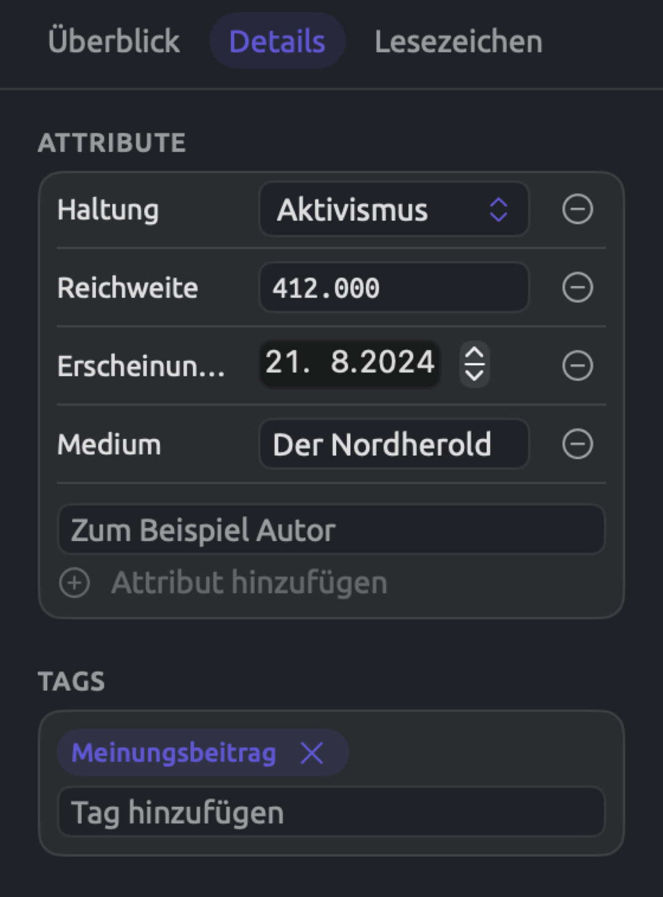
Um nachzusehen, welchen Wert ein Attribut für ein bestimmtes Dokument hat, öffnen Sie das Dokument und klicken im Inspektor auf Text und dann auf Details. Unter Attribute steht jedes Attribut, das für dieses Dokument einen Wert hat, in einer eigenen Zeile. Dort können Sie den Wert bearbeiten. Um den Wert zu löschen und das Attribut im Projekt zu behalten, klicken Sie auf die Schaltfläche zum Entfernen am Ende der Zeile (Attribut entfernen). Änderungen wirken sofort.
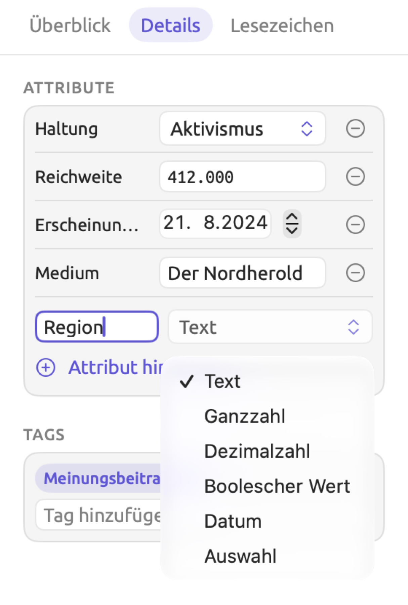
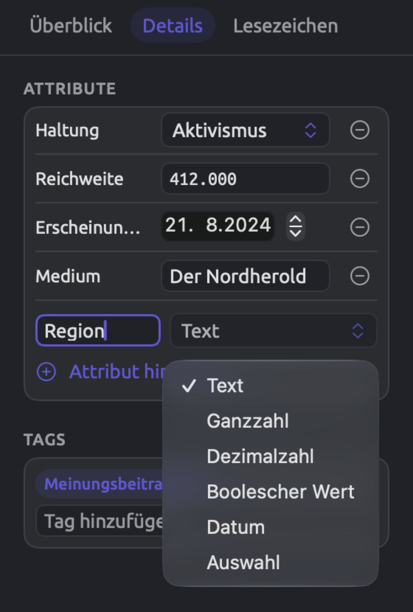
So geben Sie einen Wert für ein Attribut ein, das noch nicht angezeigt wird:
- Geben Sie den Namen des Attributs in das Feld unter der Liste ein. Ab drei eingegebenen Zeichen erscheinen Vorschläge.
- Ist der Name im Projekt neu, wählen Sie im Menü, das dann erscheint, einen Typ. Bei einer Auswahl geben Sie außerdem die Wahlmöglichkeiten ein.
- Klicken Sie auf Attribut hinzufügen oder drücken Sie den Zeilenschalter.
- Geben Sie den Wert in der neuen Zeile ein.
Die Schaltfläche Attribut hinzufügen ist in drei Fällen deaktiviert: wenn der Name leer ist (Name ist leer), wenn das Dokument das Attribut bereits hat (Bereits hinzugefügt) und wenn Sie eine neue Auswahl ohne Wahlmöglichkeiten anlegen (Keine Optionen). Jedes Mal, wenn Sie im Feld unter der Liste einen neuen Namen eingeben, fügen Sie das Attribut dem ganzen Projekt hinzu. Eine Zeile, deren Wert leer bleibt, verschwindet erst, wenn Sie das Dokument verlassen, und das Attribut bleibt im Projekt.
Ändern Sie im Inspektor einen Wert einer Übersetzung, ändert sich der entsprechende Wert des Originals.
Die Dokumenteigenschaften haben in ihrem Bereich Attribute dieselben Felder; dort werden Änderungen gesichert, sobald Sie auf Sichern klicken (siehe Attribute in Kapitel 3, Projekte und Dokumente). Wie Sie Attributwerte aus einer Tabelle importieren, erfahren Sie unter Attributwerte aus einer Tabelle importieren in Kapitel 4, Material importieren.
Einen Wert für viele Dokumente festlegen
Haben mehrere Dokumente bei einem Attribut denselben Wert, können Sie ihn allen gleichzeitig geben. Im Projekt „Klimadebatte“ haben sechs Dokumente bei „Haltung“ den Wert „Aktivismus“, fünf den Wert „Skepsis“ und drei den Wert „Neutral“; jeder dieser Werte lässt sich seinen Dokumenten also in einem Schritt zuweisen. Die Abbildung unter Das Attribute-Fenster weiter oben in diesem Kapitel zeigt die sechs Dokumente der Aktivisten so ausgewählt, dass Sie ihnen ihren gemeinsamen Wert geben können.
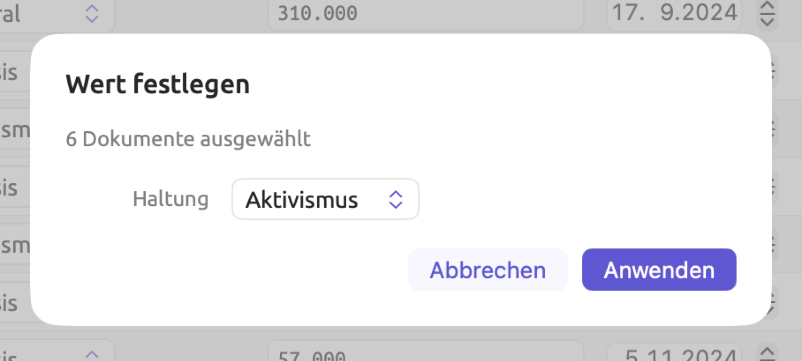
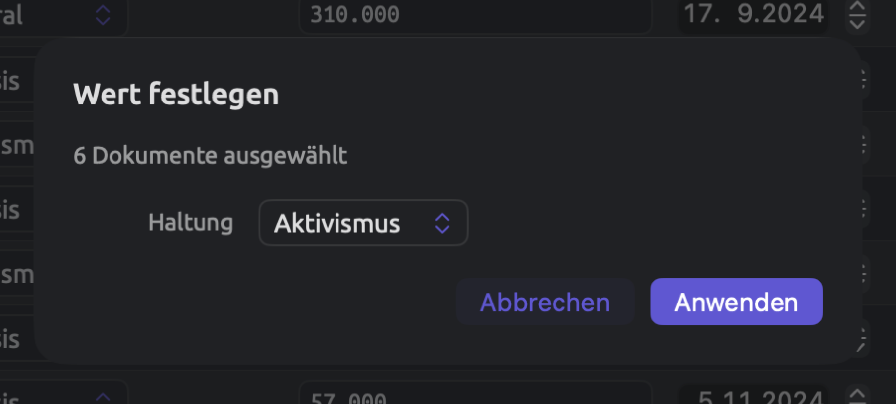
So geben Sie mehreren Dokumenten einen Wert:
- Aktivieren Sie im Attribute-Fenster die Markierungsfelder neben den Dokumenten. Das Markierungsfeld oben in der Spalte wählt alle angezeigten Zeilen aus oder hebt ihre Auswahl auf.
- Neben Suchen zeigt das Fenster nun die Zahl der ausgewählten Dokumente, etwa 6 Dokumente ausgewählt, und ein Menü Wert festlegen. Wählen Sie Wert festlegen und dann das Attribut.
- Wählen Sie im Dialog Wert festlegen den Wert aus oder geben Sie ihn ein.
- Klicken Sie auf Anwenden.
Der Wert ersetzt alles, was für dieses Attribut bisher in den ausgewählten Dokumenten gespeichert war. Bearbeiten ▸ Wert festlegen widerrufen (⌘Z) macht das Festlegen rückgängig.
Je nachdem, ob Ihr Attribut vom Typ Auswahl, Boolescher Wert, Datum oder von einem anderen Typ ist, bietet der Dialog Wert festlegen ein Menü, ein Markierungsfeld, eine Datumsauswahl oder ein Textfeld. Bei einer Dezimalzahl können Sie das Dezimaltrennzeichen eingeben, das Ihr Mac verwendet. Anwenden ist deaktiviert, wenn das Eingabefeld leer ist (Kein Wert) oder wenn der eingegebene Wert nicht zum Typ des Attributs passt (Ungültiger Wert), zum Beispiel etwa 40000 für „Reichweite“. Wert festlegen dient nur zum Eintragen von Werten; um vorhandene Werte zu löschen, entfernen Sie sie in jedem Dokument einzeln.
Wert festlegen wirkt auf die ausgewählten Zeilen, die sichtbar sind. Wählen Sie mehrere Zeilen aus, bevor Sie etwas unter Suchen eingeben, kann die Suche einige davon ausblenden, auch wenn die ausgeblendeten Zeilen ausgewählt bleiben. Die Zahl neben Wert festlegen entspricht deshalb der Zahl der Zeilen, die gerade ausgewählt und sichtbar sind. Um allen Dokumenten, die eine Suche findet, denselben Wert zu geben, suchen Sie zuerst und klicken dann auf das Markierungsfeld oben in der Spalte.
Suchen und sortieren
Mit Suchen zeigen Sie nur die Zeilen an, deren Titel oder Zellen den eingegebenen Begriff enthalten. Die Suche ignoriert Groß- und Kleinschreibung. Im Beispielprojekt „Klimadebatte“ liefert der Suchbegriff bilanz die Texte „Hoffnung braucht Arbeit“, „Die Modelle liegen daneben“ und „Wissenschaft ist nie abgeschlossen“, also die drei Texte aus „Die Wochenbilanz“.
Ein Klick auf eine Spaltenüberschrift sortiert die Zeilen aufsteigend nach den Werten dieser Spalte. Ein weiterer Klick kehrt die Reihenfolge um. Pfeile zeigen die gewählte Sortierrichtung.
- Zahlenwerte werden nach ihrer Größe sortiert. Deshalb kommt 8.500 vor 23.000.
- Werte einer Auswahl werden in der Reihenfolge der Auswahlmöglichkeiten sortiert. Bei den Wahlmöglichkeiten „Aktivismus“, „Skepsis“ und „Neutral“ stehen die Texte der Aktivisten vor den anderen.
- Text wird alphabetisch sortiert, Zahlen innerhalb eines Textwerts dagegen numerisch, sodass zum Beispiel „Entwurf 2“ vor „Entwurf 10“ steht. Datumsangaben werden chronologisch sortiert, Werte vom Typ Boolescher Wert falsch vor wahr.
- Dokumente ohne Wert stehen in beiden Sortierrichtungen am Ende.
- Bei gleichem Wert werden die Dokumente alphabetisch nach Titel sortiert, aufsteigend oder absteigend, je nachdem, ob vom niedrigsten oder vom höchsten Wert an sortiert wird.
Zwei Klicks auf die Überschrift „Reichweite“ sortieren die Zeilen vom höchsten Wert an. Wie die Abbildung unter Das Attribute-Fenster weiter oben in diesem Kapitel zeigt, beginnt die Liste dann mit „Streit um die CO2-Steuer“ (875.000), „Uns läuft die Zeit davon“ (412.000) und „Netto-Null wird teuer“ (398.000). Es folgen die Dokumente mit weniger Lesern, bis zu „Das Versprechen der Bürgermeisterin“ (8.500) und „Hitzebericht 2024“ (3.100) am Ende. Dokumente ohne Wert für dieses Attribut stehen ganz unten. Die Sortierung bleibt bestehen, bis Sie das Fenster schließen.
Ein Attribut ändern
Um ein Attribut zu bearbeiten, wählen Sie Verwalten, dann das Attribut und dann Bearbeiten, oder Sie klicken mit der rechten Maustaste auf die Spaltenüberschrift des Attributs und wählen Bearbeiten. Der Dialog Attribut bearbeiten hat die Felder Name, Typ, Auswahlmöglichkeiten (nur bei einer Auswahl) und Beschreibung (die der Export im REFI-QDA-Format enthält); sie entsprechen genau den Feldern von Neues Attribut. Ein Klick auf Sichern übernimmt die geänderte Definition; Sichern ist deaktiviert, wenn das Feld Name leer ist (Name ist leer) oder wenn eine Auswahl keine Wahlmöglichkeiten hat (Keine Auswahlmöglichkeiten).
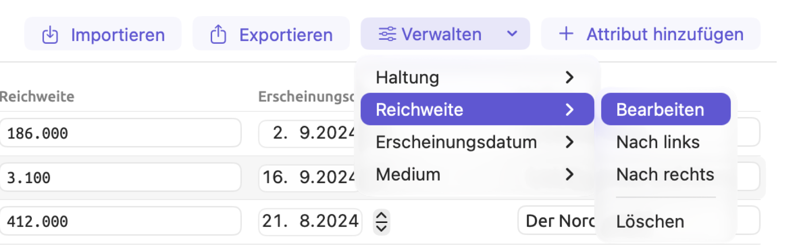
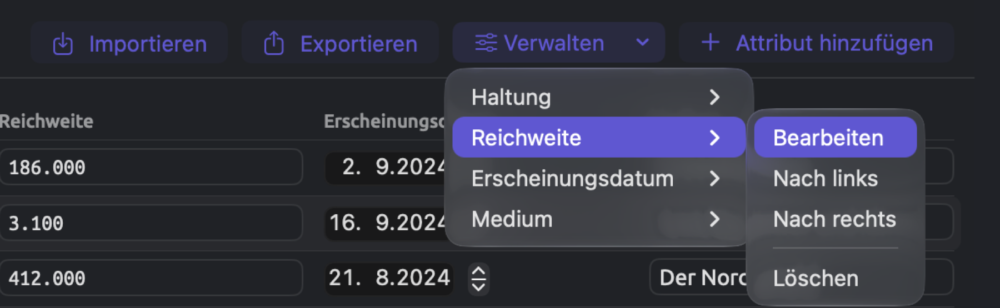
Die Wahlmöglichkeiten einer Auswahl lassen sich ergänzen, umordnen und löschen. Ihre Reihenfolge bestimmt, wie sie im Menü angeordnet sind und wie sie sortiert werden. Dokumente behalten ihren Wert, auch wenn sich die Liste der Wahlmöglichkeiten ändert.
- Löschen Sie eine Wahlmöglichkeit, die einige Dokumente haben, behalten diese Dokumente sie. In ihrem Menü erscheint sie nach allen aufgeführten Wahlmöglichkeiten, und intelligente Sets verwenden sie weiterhin.
- Benennen Sie eine Wahlmöglichkeit um (etwa „Skepsis“ in „Kritik“), behalten die Dokumente die alte Wahlmöglichkeit. Um die Dokumente umzustellen, fügen Sie die neue Bezeichnung als Wahlmöglichkeit hinzu. Danach geben Sie den Dokumenten mit der alten Wahlmöglichkeit mit Wert festlegen die neue und entfernen anschließend die alte.
Den Typ eines Attributs ändern
Es kann vorkommen, dass ein Attribut einen ganz anderen Typ braucht; vielleicht sollen die Werte eines Attributs vom Typ Text der Einheitlichkeit halber auf festgelegte Wahlmöglichkeiten beschränkt werden, was eine Auswahl erfordert. Das Menü Typ im Dialog Attribut bearbeiten bietet den aktuellen Typ an und jeden anderen Typ, zu dem alle derzeit eingetragenen Werte des Attributs passen. Beim Sichern wandelt LemmaLoom die Werte in den neuen Typ um. Welche Werte zu welchem Typ passen, zeigt diese Tabelle:
| Typ | Passende Werte |
|---|---|
| Text | jeder Wert |
| Auswahl | jeder Wert |
| Ganzzahl | ganze Zahlen aus Ziffern, bei Bedarf mit Minuszeichen und ohne führende Nullen; 12.0 passt und wird zu 12 |
| Dezimalzahl | Zahlen aus Ziffern, bei Bedarf mit Minuszeichen, mit höchstens einem Dezimalpunkt und ohne führende Nullen, bis zu 15 signifikante Stellen (0.5 passt, .5 nicht); aus 14 wird 14.0 |
| Boolescher Wert | true, false, yes, no, 1 und 0 in beliebiger Groß- und Kleinschreibung; sie werden zu wahr oder falsch |
| Datum | Datumsangaben genau in der Form 2024-08-21 (vierstelliges Jahr, zweistelliger Monat und Tag, Bindestriche); 21.08.2024 passt nicht |
Für die Attribute des Projekts „Klimadebatte“ bietet das Menü diese Typen an:
| Attribut | Aktueller Typ | Angebotene Typen |
|---|---|---|
| Haltung | Auswahl | Text, Auswahl |
| Reichweite | Ganzzahl | Text, Ganzzahl, Dezimalzahl, Auswahl |
| Erscheinungsdatum | Datum | Text, Datum, Auswahl |
| Medium | Text | Text, Auswahl |
Angenommen, jemand hat etwa 40000 in ein Attribut vom Typ Text eingegeben, das die Zahl der Leser festhält. Dann bietet das Menü Ganzzahl erst an, wenn Sie diesen Eintrag mit Suchen oder durch Sortieren der Spalte gefunden und in eine ganze Zahl geändert haben.
Wechseln Sie zu Auswahl, während Auswahlmöglichkeiten noch leer ist, trägt LemmaLoom dort automatisch die vorhandenen Werte der Dokumente in alphabetischer Reihenfolge ein. Die Abbildung unten zeigt das: „Medium“ wurde auf Auswahl umgestellt, und unter Auswahlmöglichkeiten stehen alle acht Medien von „Amt für Wetter und Klima“ bis „Rathaus-Rundbrief“. Ordnen Sie die Wahlmöglichkeiten um oder ergänzen Sie sie, bevor Sie auf Sichern klicken.
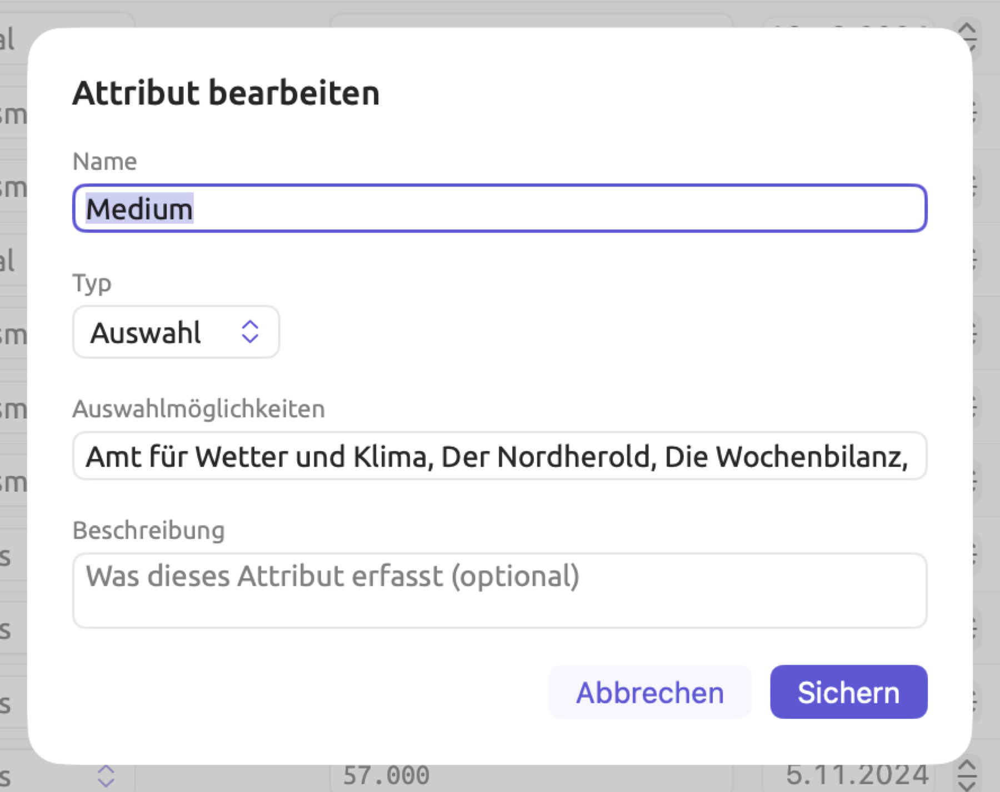
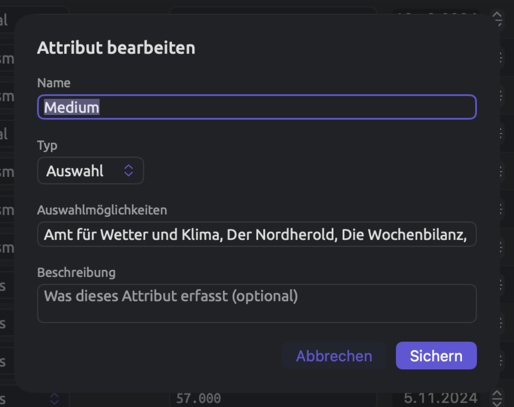
Der neue Typ bestimmt auch, welche Vergleiche eine Bedingung verwenden kann. Ein Wechsel zwischen Ganzzahl und Dezimalzahl behält alle Ihre Vergleiche bei. Ändern Sie den Typ eines Attributs auf andere Weise, prüfen Sie danach jedoch Ihre intelligenten Sets, wie unter Ein intelligentes Set ändern weiter oben in diesem Kapitel beschrieben.
Attribute anordnen
Attribute erscheinen in der Reihenfolge, in der Sie sie angelegt haben. Um ein Attribut zu verschieben, wählen Sie Verwalten, dann das Attribut und dann Nach links oder Nach rechts; Sie können auch mit der rechten Maustaste auf die Spaltenüberschrift des Attributs klicken.
Die Reihenfolge gilt überall, wo Attribute erscheinen. Dazu gehören die Spalten des Attribute-Fensters, der Inspektor, die Dokumenteigenschaften, die Projekteigenschaften und das Attributmenü in den Bedingungen intelligenter Sets. Neue Bedingungen beginnen mit dem ersten Attribut; das Attribut, das Sie am häufigsten prüfen, sollte daher vor den anderen stehen.
Ein Attribut löschen
Um ein Attribut zu löschen, wählen Sie Verwalten, dann das Attribut und dann Löschen, oder Sie klicken mit der rechten Maustaste auf seine Spaltenüberschrift und wählen Löschen. Das Attribut wird sofort gelöscht, zusammen mit seinem Wert in jedem Dokument des Projekts. Bedingungen intelligenter Sets, die das Attribut prüfen, treffen danach auf kein Dokument mehr zu (siehe Ein intelligentes Set ändern weiter oben in diesem Kapitel). Bearbeiten ▸ Attribut löschen widerrufen (⌘Z) stellt das gelöschte Attribut mit seinen Werten wieder her. Löschen Sie ein Attribut in den Projekteigenschaften, hat das dieselben Folgen, sobald Sie auf Sichern klicken; Bearbeiten ▸ Projekteigenschaften widerrufen stellt alles wieder her.
Werte exportieren und importieren
Exportieren erstellt eine CSV-Datei, die Tabellenkalkulationsprogramme öffnen können, mit einer Zeile pro angezeigtem Eintrag in der angezeigten Reihenfolge. Sie enthält die Titel der Dokumente in der Spalte Dokument und danach jedes Attribut als eigene Spalte. Der Dateiname richtet sich nach dem Namen Ihres Projekts, etwa Klimadebatte-attributes.csv.
Importieren liest Attributwerte aus einer CSV-Datei oder einer Datei mit Tabulatoren als Trennzeichen und legt bei Bedarf beim Import sogar Attribute an. Wie das genau funktioniert, beschreibt Attributwerte aus einer Tabelle importieren in Kapitel 4, Material importieren. Um viele Attributwerte hinzuzufügen oder zu ändern, ist es oft am einfachsten, die Tabelle zu exportieren, sie in einem Tabellenkalkulationsprogramm zu bearbeiten und wieder zu importieren.
Wo Attribute verwendet werden können
- Intelligente Sets prüfen Attributwerte, wie weiter oben unter Intelligente Sets in diesem Kapitel beschrieben.
- Die Code-Matrix kann ihre Spalten nach Attributen gruppieren (siehe Kapitel 13, Codes auswerten).
- Der Skizzenraum vergleicht die grammatischen Eigenschaften von Wörtern über verschiedene Attributwerte hinweg (siehe Attributwerte vergleichen in Kapitel 14, Skizzenraum).
- Abfragen prüfen Attributwerte in Regeln (siehe Felder in Kapitel 15, Eine Abfrage erstellen). Vergleichen zeigt die Häufigkeiten für jeden Wert eines Attributs nebeneinander, zusammen mit einem statistischen Test (siehe Kapitel 16, Abfrageergebnisse und Statistik).
Auch Codes können Attribute haben, deren Werte zu den einzelnen Kodierungen gehören. Diese Attribute legen Sie direkt am Code an, und das Attribute-Fenster zeigt nur die Attribute von Dokumenten. Mehr dazu finden Sie unter Codes mit Attributen in Kapitel 7, Kodieren.
Sets und Tags als Geltungsbereich
Ein Set, ein intelligentes Set oder ein Tag kann die analysierten Dokumente eingrenzen. Die folgende Tabelle zeigt, wo Sie jedes davon wählen:
| Wo | Sets und intelligente Sets | Tags |
|---|---|---|
| Ein aus der Seitenleiste geöffneter Tab mit seinen zehn Ansichten | ja | ja |
| Das Menü hinter dem Wortfeld im Wortskizzen-Fenster | ja | ja |
| Das Menü für den Geltungsbereich in Fenster ▸ Abfragen | die Sets des aktiven Projekts | nein |
| Dokumente im Dialog Automatisch kodieren | ja | nein |
| Exportieren im Kontextmenü | ja | nein |
| Geltungsbereich ▸ Dokumentset in den Dialogen Neuer Code und Code bearbeiten (siehe Wo ein Code verwendet werden kann in Kapitel 7, Kodieren) | ja | nein |
| Vergleichen mit ▸ Set in einer Abfrage Schlüsselwörter (siehe Schlüsselwörter in Kapitel 16, Abfrageergebnisse und Statistik) | ja | nein |
Das Menü hinter dem Wortfeld im Wortskizzen-Fenster zeigt den Geltungsbereich, den Sie gerade verwenden. Es nennt zuerst das ganze Projekt, dann seine Sets (in alphabetischer Reihenfolge), seine Tags und zuletzt das Dokument im aktiven Tab. Wo nur Sets angeboten werden, wechseln Sie im Tab des betreffenden Tags zur Ansicht Abfragen, oder Sie legen ein intelligentes Set mit einer Bedingung Tags an.
Übersetzungen
Gewöhnliche Sets, intelligente Sets und die Tags in der Seitenleiste berücksichtigen nur die Originalfassungen der Dokumente. Eine Übersetzung folgt ihrem Original überallhin.
So steht unter einem Set nur das Originaldokument (siehe Dokumente hinzufügen und entfernen weiter oben), und ein intelligentes Set prüft die Werte des Originals. Ein Original und seine Übersetzungen teilen sich Tags, Attributwerte und die Gruppe, sie sind also für beide immer gleich.
Eine Analyse eines Sets, eines Tags oder eines Projekts liest standardmäßig die Originaldokumente. „Uns läuft die Zeit davon“ und „Uns läuft die Zeit davon (Englisch)“ zählen dabei also als ein einziger Text. Auch die Kodierungsansichten eines Sets zählen die Kodierungen in den Originaldokumenten. Wenn Sie eine Textstelle in einer Übersetzung kodieren, legt LemmaLoom an derselben Stelle im zugehörigen Original eine Kodierung an; eine Kodierung in „Uns läuft die Zeit davon (Englisch)“ zählt deshalb einmal, im Original „Uns läuft die Zeit davon“.
Zwei Arten von Analysen können Übersetzungen statt der Originale lesen. Abfragen haben in ihrer Bedingung Optionen die Einstellung Korpus, mit der Sie als Korpus Originale, Übersetzungen oder Beide wählen (siehe Optionen in Kapitel 15, Eine Abfrage erstellen). Wortskizzen für ein Set, ein Tag oder das Projekt bieten im Menü hinter dem Wortfeld weitere Optionen, wenn Übersetzungen vorhanden sind. Dieses Menü hat einen Abschnitt Korpus mit der Option Originale und einer Option für jede vorhandene Übersetzungssprache, etwa Übersetzungen (Englisch) (siehe Kapitel 12, Wortskizze). Mehr zur Arbeit mit Übersetzungen finden Sie in Kapitel 9, Übersetzungen und geteilte Ansicht.